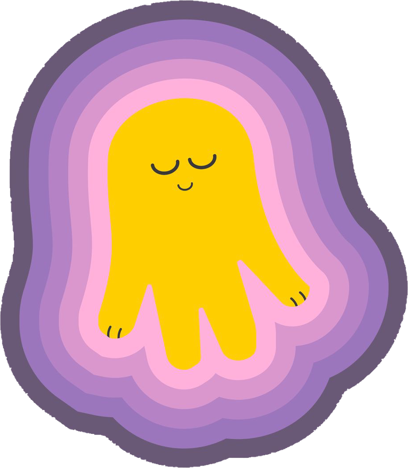
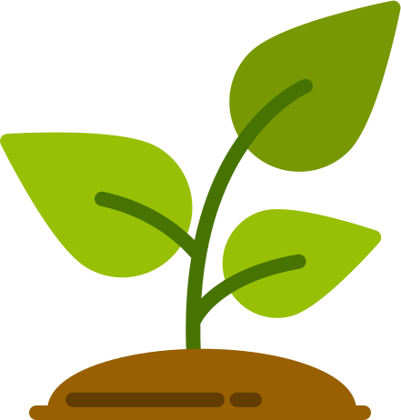

<!DOCTYPE html>
<html lang="uk">
<head>
<meta charset="utf-8">
<meta name="viewport" content="width=device-width, initial-scale=1, viewport-fit=cover">
<meta name="theme-color" content="#568203">
<title>Підвіконня</title>
<link rel="manifest" href="manifest.json">
<link rel="icon" href="icon-192.png">
<link rel="apple-touch-icon" href="icon-192.png">
<style>
:root{
  --bg:#fff8b9; --paper:#fffef3; --ink:#2f4a02; --ink2:#6d8149;
  --choc:#568203; --choc2:#3f6102; --pist:#fff8b9; --pist-d:#8fb52e; --pist-l:#eff5cb;
  --line:#e6dca8; --rust:#a94a15; --amber:#cf9312; --clay:#f0a6a8;
  --r:26px;
}
*{box-sizing:border-box;-webkit-tap-highlight-color:transparent}
html,body{overscroll-behavior-y:contain}
body{margin:0;background:var(--bg);color:var(--ink);
  font:16px/1.5 -apple-system,BlinkMacSystemFont,"Segoe UI",Roboto,sans-serif;
  padding-bottom:calc(94px + env(safe-area-inset-bottom));}
h1,h2,h3{margin:0;font-family:-apple-system,BlinkMacSystemFont,"Segoe UI",Roboto,sans-serif;font-weight:800;letter-spacing:-.02em}
button{font:inherit;cursor:pointer;color:inherit}
svg{display:block}
.wrap{max-width:560px;margin:0 auto;padding:0 16px 24px}
.top{max-width:560px;margin:0 auto;padding:22px 16px 12px}
.top h1{font-size:28px}
.top .sub{color:var(--ink2);font-size:13px;margin-top:3px}
.back{background:var(--paper);border:1px solid var(--line);border-radius:999px;padding:7px 15px 7px 11px;font-size:14px;margin-bottom:10px;display:inline-flex;align-items:center;gap:6px}

.card{background:var(--paper);border:1px solid var(--line);border-radius:var(--r);padding:17px;margin-bottom:14px}
.card.dark{background:var(--choc);border-color:var(--choc);color:#f7f6dc;position:relative;overflow:hidden}
.card.dark h1,.card.dark h2,.card.dark h3{color:var(--pist)}
.row{display:flex;gap:12px;align-items:center}
.between{justify-content:space-between}
.muted{color:var(--ink2);font-size:14px}
.dark .muted{color:#d5e3a8}
.small{font-size:13px}
.b{font-weight:600}
.ic{flex:0 0 auto}

.btn{border:1px solid var(--choc);background:var(--choc);color:var(--pist);border-radius:999px;padding:14px 20px;font-size:15px;font-weight:500;
  display:inline-flex;align-items:center;justify-content:center;gap:8px}
.btn.line{background:var(--paper);color:var(--ink);border-color:var(--line)}
.btn.pist{background:var(--pist);border-color:var(--pist);color:var(--choc);font-weight:600}
.btn.wide{width:100%}
.btn.sm{padding:10px 15px;font-size:14px}
.btn.danger{background:var(--paper);color:var(--rust);border-color:#ecd2b4}
.chips{display:flex;flex-wrap:wrap;gap:8px}
.chip{border:1px solid var(--line);background:var(--paper);border-radius:999px;padding:9px 14px;font-size:14px;display:inline-flex;align-items:center;gap:7px}
.chip.on{background:var(--choc);border-color:var(--choc);color:var(--pist)}
.pill{display:inline-flex;align-items:center;gap:5px;font-size:12px;font-weight:600;padding:5px 11px;border-radius:999px;background:var(--pist-l);color:#3d5a1c}
.pill.late{background:#f4dcc2;color:#8a4210}
.pill.soon{background:#fceeae;color:#74590c}
.pill.dim{background:#ebe7d2;color:var(--ink2)}

input,select,textarea{font:inherit;width:100%;padding:13px 15px;border:1px solid var(--line);border-radius:18px;background:var(--paper);color:var(--ink)}
label.f{display:block;margin-bottom:12px}
label.f span{display:block;font-size:13px;color:var(--ink2);margin-bottom:5px}
.grid2{display:grid;grid-template-columns:1fr 1fr;gap:10px}

.blob{position:absolute;border-radius:50%;pointer-events:none;animation:blobPulse 6s ease-in-out infinite}
@keyframes blobPulse{0%,100%{transform:scale(1) translateY(0)}50%{transform:scale(1.09) translateY(-4px)}}

.rise{position:absolute;inset:0;overflow:hidden;pointer-events:none;z-index:0;border-radius:inherit}
.rise i{position:absolute;bottom:-34px;display:block;
  background:url('bubble.png') center/contain no-repeat;
  animation:riseUp linear infinite}
.rise.light i{opacity:.85}
.rise i:nth-child(1){left:5%;width:20px;height:20px;animation-duration:8.5s;animation-delay:0s}
.rise i:nth-child(2){left:18%;width:30px;height:30px;animation-duration:11s;animation-delay:1.6s}
.rise i:nth-child(3){left:33%;width:15px;height:15px;animation-duration:7.4s;animation-delay:.5s}
.rise i:nth-child(4){left:49%;width:26px;height:26px;animation-duration:9.8s;animation-delay:2.4s}
.rise i:nth-child(5){left:64%;width:17px;height:17px;animation-duration:8s;animation-delay:3.3s}
.rise i:nth-child(6){left:78%;width:28px;height:28px;animation-duration:12s;animation-delay:.9s}
.rise i:nth-child(7){left:90%;width:13px;height:13px;animation-duration:7.8s;animation-delay:2s}
@keyframes riseUp{
  0%{transform:translateY(0) translateX(0) scale(.85);opacity:0}
  14%{opacity:1}
  45%{transform:translateY(-90px) translateX(-9px) scale(1)}
  85%{opacity:.65}
  100%{transform:translateY(-200px) translateX(10px) scale(1.05);opacity:0}
}
.hero-head{display:flex;justify-content:space-between;align-items:flex-start;gap:12px;position:relative;z-index:1}
.hero-title{font-family:-apple-system,BlinkMacSystemFont,"Segoe UI",Roboto,sans-serif;font-weight:800;letter-spacing:-.02em;font-size:25px;line-height:1.12;color:var(--pist)}
.ring{position:relative;width:66px;height:66px;flex:0 0 auto}
.ring svg{transform:rotate(-90deg)}
.ring .val{position:absolute;inset:0;display:grid;place-items:center;font-size:16px;font-weight:700;color:var(--pist)}

.bar{height:10px;border-radius:999px;background:#ebe6c0;overflow:hidden}
.dark .bar{background:#ffffff1f}
.bar i{display:block;height:100%;border-radius:999px;background:var(--pist);transition:width .7s cubic-bezier(.3,.9,.3,1)}
.bar.water i{background:var(--pist)}
.bar.food i{background:var(--pist-d)}
.bar.love i{background:var(--clay)}
.bar.xp i{background:var(--pist)}

.task{display:flex;gap:13px;align-items:center;background:var(--paper);border:1px solid var(--line);border-radius:var(--r);padding:13px;margin-bottom:10px}
.task.late{border-color:#ecd2b4;background:#fdf7ec}
.av{width:58px;height:58px;flex:0 0 auto;border-radius:20px;overflow:hidden}
.av img,.av svg{width:100%;height:100%;object-fit:cover;display:block}

.pgrid{display:grid;grid-template-columns:1fr 1fr;gap:12px}
.pcard{background:var(--paper);border:1px solid var(--line);border-radius:var(--r);padding:13px;text-align:left;display:block;width:100%}
.pcard .av{width:100%;height:auto;aspect-ratio:1;border-radius:20px;margin-bottom:11px}
.pcard .nm{font-weight:600;font-size:15px;line-height:1.2;margin-bottom:2px}

.hero-photo{border-radius:var(--r);overflow:hidden;aspect-ratio:1;background:var(--pist-l)}
.hero-photo img,.hero-photo svg{width:100%;height:100%;object-fit:cover;display:block}

.stat{display:flex;align-items:center;gap:11px;margin-bottom:12px}
.stat .lbl{width:96px;font-size:13px;color:var(--ink2);flex:0 0 auto;display:flex;align-items:center;gap:7px}
.stat .bar{flex:1}
.stat .plus{width:36px;height:36px;border-radius:50%;border:1px solid var(--line);background:var(--paper);flex:0 0 auto;
  display:grid;place-items:center}
.stat .plus[disabled]{opacity:.3}

.tabs{display:flex;gap:20px;border-bottom:1px solid var(--line);margin:6px 0 14px}
.tabs button{background:none;border:0;padding:11px 0;color:var(--ink2);font-size:15px;border-bottom:2px solid transparent}
.tabs button.on{color:var(--ink);border-color:var(--pist-d);font-weight:600}

.kv{display:grid;grid-template-columns:106px 1fr;gap:8px 12px;font-size:14px;margin:0}
.kv dt{color:var(--ink2)}
.kv dd{margin:0}
ul.tips{margin:12px 0 0;padding-left:18px}
ul.tips li{margin-bottom:7px}
ul.tips li::marker{color:var(--pist-d)}
.prob{border-top:1px solid var(--line);padding-top:11px;margin-top:11px}
.sep{height:1px;background:var(--line);margin:14px 0}
.h-sec{font-size:13px;color:var(--ink2);margin:22px 4px 10px}

.photos{display:grid;grid-template-columns:1fr 1fr 1fr;gap:8px}
.photos figure{margin:0}
.photos img{width:100%;aspect-ratio:1;object-fit:cover;border-radius:18px;display:block;background:var(--pist-l)}
.photos figcaption{font-size:11px;color:var(--ink2);margin-top:4px;text-align:center;line-height:1.25}
.cmp{display:grid;grid-template-columns:1fr 1fr;gap:10px}
.cmp img{width:100%;border-radius:18px;display:block}

.cal{display:grid;grid-template-columns:repeat(7,1fr);gap:5px;text-align:center}
.cal .h{font-size:11px;color:var(--ink2);padding:2px 0}
.cal .d{aspect-ratio:1;display:grid;place-items:center;border-radius:13px;font-size:12px;color:var(--ink2)}
.cal .d.now{outline:2px solid var(--choc);outline-offset:-2px;color:var(--ink);font-weight:700}
.cal .d.done{background:var(--pist);color:var(--choc);font-weight:600}
.cal .d.plan{background:var(--pist-l);color:#4c6a28}
.cal .d.late{background:#f4dcc2;color:#8a4210;font-weight:600}

.achg{display:grid;grid-template-columns:1fr 1fr;gap:12px}
.ach{background:var(--paper);border:1px solid var(--line);border-radius:var(--r);padding:15px}
.ach.on{background:var(--choc);border-color:var(--choc);color:#f7f6dc}
.ach.on .icw{color:var(--pist)}
.icw{color:var(--ink2);margin-bottom:10px}
.ach .nm{font-weight:800;font-size:15px;font-family:-apple-system,BlinkMacSystemFont,"Segoe UI",Roboto,sans-serif;letter-spacing:-.01em;line-height:1.2}
.ach.on .nm{color:var(--pist)}
.ach .ds{font-size:12px;color:var(--ink2);margin-top:4px}
.ach.on .ds{color:#d5e3a8}
.ach .bar{margin-top:10px;height:7px}

.log-item{display:flex;gap:11px;padding:11px 0;border-bottom:1px solid var(--line);align-items:flex-start}
.log-item:last-child{border:0}
.dot{width:9px;height:9px;border-radius:50%;background:var(--pist-d);margin-top:8px;flex:0 0 auto}

.nav{position:fixed;left:0;right:0;bottom:0;z-index:20;background:#fffef3f2;backdrop-filter:blur(10px);border-top:1px solid var(--line);
  display:flex;align-items:flex-end;padding:9px 4px calc(9px + env(safe-area-inset-bottom));max-width:560px;margin:0 auto}
.nav button{flex:1;background:none;border:0;color:var(--ink2);font-size:10.5px;padding:5px 2px;display:grid;gap:4px;justify-items:center;opacity:.55}
.nav button.on{color:var(--choc);font-weight:600;opacity:1}
.navpng{display:block;width:22px;height:22px;margin:0 auto;object-fit:contain}
.nav button:not(.on) .navpng{opacity:.7}
.nav .fab{background:var(--pist);color:var(--choc);width:56px;height:56px;border-radius:50%;display:grid;place-items:center;
  flex:0 0 auto;margin:0 6px 4px;opacity:1;box-shadow:0 6px 18px #56820347}

.viewer{position:fixed;inset:0;background:#24330aee;z-index:40;display:grid;place-items:center;padding:16px}
.viewer img{max-width:100%;max-height:74vh;border-radius:18px}
.viewer button{background:#ffffff2e;border:0;color:#f7f6dc;border-radius:999px;padding:10px 16px}
.viewer .bar2{position:absolute;top:0;left:0;right:0;display:flex;justify-content:space-between;padding:14px}

.pop{position:fixed;inset:0;background:#24330ae0;z-index:60;display:grid;place-items:center;padding:24px}
.pop .box{background:var(--choc);color:#f7f6dc;border-radius:30px;padding:28px 24px;text-align:center;max-width:340px;width:100%;position:relative;overflow:hidden}
.pop .big{display:grid;place-items:center;margin-bottom:14px;color:var(--pist)}
.pop h2{font-size:25px;margin-bottom:8px;color:var(--pist)}
.toast{position:fixed;left:50%;transform:translateX(-50%);bottom:calc(106px + env(safe-area-inset-bottom));background:var(--choc);color:var(--pist);
  padding:12px 20px;border-radius:999px;font-size:14px;z-index:50;opacity:0;transition:opacity .2s;pointer-events:none;max-width:88%}
.toast.on{opacity:1}
.empty{text-align:center;color:var(--ink2);padding:24px 8px}
.empty .big{display:grid;place-items:center;margin-bottom:12px;color:var(--pist-d)}
.masc{pointer-events:none;display:block;width:100%;height:auto}
.masc-abs{position:absolute;pointer-events:none;z-index:0}
.hero-m{right:8px;bottom:-8px;width:92px}
.hero-body{position:relative;z-index:1;padding-right:104px}
.masc-empty{width:170px;margin:0 auto 16px}
.masc-big{width:158px;margin:0 auto 16px}
.masc-pop{width:170px;margin:0 auto 16px}
.masc-ach{width:76px;align-self:center;margin:0 2px 0 0}
.bubbles{display:flex;flex-wrap:wrap;gap:9px;justify-content:center;margin:0 0 18px}
.bub{border-radius:999px;padding:9px 18px;font-family:-apple-system,BlinkMacSystemFont,"Segoe UI",Roboto,sans-serif;font-size:17px;font-weight:800;letter-spacing:-.01em;line-height:1;
  animation:bubFloat 2.8s ease-in-out infinite}
.bub:nth-child(1){background:var(--pist);color:var(--choc);--br:-5deg;animation-delay:0s}
.bub:nth-child(2){background:var(--clay);color:#2f4a02;--br:3deg;animation-delay:.35s}
.bub:nth-child(3){background:var(--choc);color:var(--pist);--br:-2deg;animation-delay:.7s}
@keyframes bubFloat{0%,100%{transform:rotate(var(--br)) translateY(0)}50%{transform:rotate(var(--br)) translateY(-6px)}}
/* пружинка при натисканні */
.btn,.chip,.back,.nav .fab,.pcard,.stat .plus,.tabs button{transition:transform .13s cubic-bezier(.34,1.56,.64,1)}
.btn:active,.chip:active,.back:active,.nav .fab:active,.stat .plus:active,.tabs button:active{transform:scale(.94)}
.pcard:active,button.task:active{transform:scale(.975)}

/* плавна поява карток */
.reveal{opacity:0;transform:translateY(12px)}
.reveal.in{opacity:1;transform:none;transition:opacity .42s ease,transform .42s cubic-bezier(.22,.9,.3,1)}

/* конфеті */
.conf{position:absolute;top:-16px;width:8px;height:13px;z-index:2;pointer-events:none;animation:confFall linear forwards}
@keyframes confFall{
  0%{transform:translateY(-20px) rotate(0deg);opacity:1}
  100%{transform:translateY(340px) rotate(700deg);opacity:0}
}

/* вогник серії */
.flame{display:inline-flex;transform-origin:50% 85%;animation:flick 1.9s ease-in-out infinite}
@keyframes flick{
  0%,100%{transform:scale(1) rotate(0deg)}
  25%{transform:scale(1.13) rotate(-5deg)}
  50%{transform:scale(.95) rotate(3deg)}
  75%{transform:scale(1.08) rotate(-2deg)}
}
@media (prefers-reduced-motion:reduce){*{transition:none!important;animation:none!important}.reveal{opacity:1;transform:none}}
</style>
</head>
<body>
<div id="app"></div>
<nav class="nav" id="nav"></nav>
<div class="toast" id="toast"></div>
<input type="file" id="photoInput" accept="image/*" style="display:none">
<input type="file" id="importInput" accept="application/json,.json" style="display:none">

<script>
// База популярних кімнатних рослин
// w:[літо,зима] дні між поливами; f:[літо,зима] дні між підживленнями (0 = не підживлювати)
// d: складність 1-3, tox: токсична для котів/собак
const BASE = [
{k:"monstera",n:"Монстера",lat:"Monstera deliciosa",li:"Яскраве розсіяне світло, без прямого сонця",w:[7,12],f:[21,0],m:2,t:"18–27 °C",h:"Середня–висока, 50–70%",s:"Пухкий для ароїдних, з корою і перлітом",r:"Раз на 2 роки, навесні",d:1,tox:1,
tips:["Дай верхньому шару (3–4 см) просохнути перед поливом.","Постав опору-мохову трубку — листя стане більшим і з отворами.","Протирай листя вологою ганчіркою раз на 2 тижні."],
prob:[["Листя без отворів","Замало світла або рослина ще молода"],["Жовтіє нижнє листя","Перелив, вода застоюється в піддоні"],["Коричневі сухі краї","Сухе повітря або пропущений полив"]]},

{k:"ficus_benjamina",n:"Фікус Бенджаміна",lat:"Ficus benjamina",li:"Багато розсіяного світла",w:[6,10],f:[21,0],m:1,t:"18–24 °C",h:"Середня",s:"Універсальний з дренажем",r:"Раз на 2–3 роки",d:2,tox:1,
tips:["Не переставляй з місця на місце — скидає листя від будь-якої зміни.","Уникай протягів і холодного підвіконня взимку.","Формуй крону обрізкою навесні."],
prob:[["Масово опадає листя","Зміна місця, протяг або різкий перепад поливу"],["Липке листя","Щитівка — перевір зворотний бік листка"],["Оголюються гілки знизу","Бракує світла"]]},

{k:"ficus_lyrata",n:"Фікус ліратний",lat:"Ficus lyrata",li:"Дуже яскраве розсіяне, трохи ранкового сонця",w:[8,12],f:[21,0],m:1,t:"18–26 °C",h:"Середня",s:"Пухкий, добре дренований",r:"Раз на 2 роки",d:3,tox:1,
tips:["Поливай тільки коли просохло 5 см ґрунту — не терпить сирості.","Повертай горщик на чверть щотижня, щоб ріс рівно.","Стабільність важливіша за ідеальні умови."],
prob:[["Коричневі плями в центрі листка","Перелив, корені підгнивають"],["Коричневі краї","Сухе повітря або нестача води"],["Не росте","Замало світла або пора підживити"]]},

{k:"ficus_elastica",n:"Фікус каучуконосний",lat:"Ficus elastica",li:"Яскраве розсіяне",w:[8,14],f:[28,0],m:1,t:"18–26 °C",h:"Середня",s:"Універсальний з перлітом",r:"Раз на 2 роки",d:1,tox:1,
tips:["Протирай листя — на глянці добре видно пил.","Прищипни верхівку, щоб пішли бічні гілки.","Взимку поливай значно рідше."],
prob:[["Жовтіє і опадає нижнє листя","Перелив"],["Дрібне нове листя","Мало світла або живлення"],["Обвисле листя","Пересушений ґрунт"]]},

{k:"sansevieria",n:"Сансев'єрія",lat:"Dracaena trifasciata",li:"Від півтіні до яскравого світла — витримує все",w:[18,35],f:[45,0],m:0,t:"15–29 °C",h:"Будь-яка",s:"Для кактусів і сукулентів",r:"Раз на 3–4 роки, любить тісний горщик",d:1,tox:1,
tips:["Головна помилка — надмірний полив. Краще забути, ніж залити.","Взимку в прохолодній кімнаті можна не поливати місяць.","Легко розмножується листовими живцями."],
prob:[["М'яка основа листка","Гниль від перелив; вийми і обріж уражене"],["Зморшкуваті листки","Навпаки, пересушено"],["Листя падає врізнобіч","Замало світла"]]},

{k:"zamioculcas",n:"Замiокулькас",lat:"Zamioculcas zamiifolia",li:"Від тіні до розсіяного світла",w:[16,30],f:[45,0],m:0,t:"18–26 °C",h:"Будь-яка",s:"Пухкий, з піском або перлітом",r:"Раз на 2–3 роки",d:1,tox:1,
tips:["Має підземні бульби із запасом води — переживе відпустку.","Жовті листки майже завжди означають перелив.","Росте повільно, це нормально."],
prob:[["Жовтіють стебла","Перелив"],["Стебла падають набік","Мало світла"],["Не росте роками","Тісний горщик або брак живлення"]]},

{k:"spathiphyllum",n:"Спатифілум",lat:"Spathiphyllum",li:"Півтінь або розсіяне світло",w:[5,8],f:[21,0],m:2,t:"18–26 °C",h:"Висока",s:"Пухкий, вологоємний",r:"Щороку навесні",d:1,tox:1,
tips:["Сам показує спрагу — опускає листя. Але не доводь до цього регулярно.","Любить обприскування і піддон з вологим керамзитом.","Не цвіте в тіні — переставь ближче до вікна."],
prob:[["Коричневі кінчики","Жорстка вода або сухе повітря"],["Не цвіте","Мало світла або завеликий горщик"],["Чорніють листки","Холод або перелив"]]},

{k:"anthurium",n:"Антуріум",lat:"Anthurium andraeanum",li:"Яскраве розсіяне, без прямих променів",w:[6,10],f:[21,0],m:2,t:"20–27 °C",h:"Висока, від 60%",s:"Грубий для ароїдних, з корою",r:"Раз на 2 роки",d:2,tox:1,
tips:["Корені мають дихати — не бери щільний важкий ґрунт.","Прибирай відцвілі квітки біля основи.","Тримай подалі від батареї."],
prob:[["Жовті плями на листі","Сонячний опік"],["Дрібні квітки або їх нема","Мало світла чи фосфору"],["Сохнуть кінчики","Сухе повітря"]]},

{k:"chlorophytum",n:"Хлорофітум",lat:"Chlorophytum comosum",li:"Розсіяне, витримує півтінь",w:[6,10],f:[21,0],m:1,t:"15–26 °C",h:"Будь-яка",s:"Універсальний",r:"Щороку — швидко заповнює горщик",d:1,tox:0,
tips:["Найпростіша рослина для старту, майже незнищенна.","Дітки на вусах легко вкорінюються у воді.","Пестрі сорти потребують більше світла."],
prob:[["Коричневі кінчики","Фтор і хлор із води — відстоюй воду"],["Блідне смужка","Мало світла"],["Жовтіє основа","Перелив"]]},

{k:"pachira",n:"Пахіра",lat:"Pachira aquatica",li:"Яскраве розсіяне",w:[10,18],f:[28,0],m:1,t:"18–26 °C",h:"Середня",s:"Дренований, з піском",r:"Раз на 2 роки",d:1,tox:0,
tips:["Стовбур запасає воду — краще недолити.","Повертай до світла, бо тягнеться в один бік.","Не заплітай стовбури туго, якщо їх кілька."],
prob:[["Жовтіє листя","Перелив"],["Опадає листя","Протяг або різка зміна умов"],["М'який стовбур","Гниль, полив терміново припинити"]]},

{k:"dracaena_marginata",n:"Драцена маргіната",lat:"Dracaena marginata",li:"Розсіяне, витримує півтінь",w:[10,16],f:[28,0],m:1,t:"18–26 °C",h:"Середня",s:"Універсальний з дренажем",r:"Раз на 2–3 роки",d:1,tox:1,
tips:["Чутлива до фтору — поливай відстояною або фільтрованою водою.","Обріж верхівку, якщо витягнулась: дасть бічні пагони.","Не залишай воду в піддоні."],
prob:[["Коричневі кінчики з жовтим обідком","Вода з-під крана або сухе повітря"],["М'яке жовте листя","Перелив або холод"],["Гола довга ніжка","Природно з віком, поможе обрізка"]]},

{k:"dracaena_fragrans",n:"Драцена запашна",lat:"Dracaena fragrans",li:"Розсіяне світло, півтінь",w:[10,16],f:[28,0],m:1,t:"18–26 °C",h:"Середня",s:"Універсальний",r:"Раз на 2–3 роки",d:1,tox:1,
tips:["Ґрунт має просихати наполовину між поливами.","Протирай широке листя від пилу.","Взимку тримай від холодного скла."],
prob:[["Сухі кінчики","Сухе повітря"],["Плями на листі","Сонячний опік"],["Гнилий запах від землі","Перелив, потрібна пересадка"]]},

{k:"yucca",n:"Юкка",lat:"Yucca elephantipes",li:"Пряме сонце або дуже яскраве світло",w:[12,25],f:[30,0],m:0,t:"16–28 °C",h:"Низька",s:"Піщаний, дуже дренований",r:"Раз на 2–3 роки",d:1,tox:1,
tips:["Найчастіша причина загибелі — перелив.","Улітку можна виносити на балкон.","Взимку прохолодніше і майже без води."],
prob:[["М'який стовбур","Гниль від перелив"],["Коричневі кінчики","Сухе повітря або надлишок солей"],["Витягується","Замало світла"]]},

{k:"codiaeum",n:"Кротон",lat:"Codiaeum variegatum",li:"Максимум яскравого світла — від нього залежить колір",w:[5,9],f:[21,0],m:2,t:"20–27 °C",h:"Висока",s:"Поживний, дренований",r:"Раз на 1–2 роки",d:3,tox:1,
tips:["Втрачає строкатість у тіні.","Не терпить протягів і температури нижче 15 °C.","Сік отруйний — працюй у рукавичках."],
prob:[["Скидає листя","Протяг, холод або пересушка"],["Зелене замість строкатого","Мало світла"],["Павутина на листі","Павутинний кліщ — підвищ вологість"]]},

{k:"dieffenbachia",n:"Дифенбахія",lat:"Dieffenbachia",li:"Розсіяне, півтінь",w:[6,10],f:[21,0],m:2,t:"18–26 °C",h:"Середня–висока",s:"Пухкий, поживний",r:"Щороку",d:2,tox:1,
tips:["Сік дуже їдкий — тримай подалі від дітей і тварин.","Повертай горщик, бо росте однобоко.","Обріж верхівку, коли оголиться стовбур."],
prob:[["Жовтіє нижнє листя","Природно, але масово — перелив"],["Сохнуть краї","Сухе повітря"],["Витягнутий тонкий стовбур","Мало світла"]]},

{k:"aglaonema",n:"Аглаонема",lat:"Aglaonema",li:"Півтінь, розсіяне світло",w:[8,14],f:[28,0],m:1,t:"18–27 °C",h:"Середня",s:"Пухкий, легкий",r:"Раз на 2 роки",d:1,tox:1,
tips:["Одна з небагатьох красивих рослин для темнуватої кімнати.","Не тримай нижче 15 °C.","Рожеві сорти потребують більше світла, ніж зелені."],
prob:[["Скручене листя","Холод або холодна вода для поливу"],["Жовті плями","Сонячний опік"],["Повільний ріст узимку","Норма, зменш полив"]]},

{k:"calathea",n:"Калатея",lat:"Calathea / Goeppertia",li:"М'яке розсіяне, без сонця",w:[5,8],f:[28,0],m:3,t:"18–26 °C",h:"Дуже висока, від 60%",s:"Легкий, вологоємний",r:"Щороку навесні",d:3,tox:0,
tips:["Тільки відстояна, фільтрована або дощова вода.","Ґрунт має бути злегка вологим завжди, але не мокрим.","Увечері складає листя — це нормально."],
prob:[["Сухі коричневі краї","Жорстка вода або сухе повітря"],["Скручене листя","Пересушила ґрунт"],["Втрата візерунка","Забагато прямого світла"]]},

{k:"maranta",n:"Маранта",lat:"Maranta leuconeura",li:"Розсіяне, півтінь",w:[5,9],f:[28,0],m:3,t:"18–26 °C",h:"Висока",s:"Легкий, вологоємний",r:"Щороку",d:2,tox:0,
tips:["Любить кашпо з піддоном і вологим керамзитом.","Обріж витягнуті пагони — кущитиметься.","Не став біля батареї."],
prob:[["Сохнуть кінчики","Сухе повітря"],["Бліде листя","Забагато світла"],["Гниють стебла","Перелив у прохолоді"]]},

{k:"alocasia",n:"Алоказія",lat:"Alocasia",li:"Яскраве розсіяне",w:[5,10],f:[21,0],m:3,t:"20–27 °C",h:"Висока",s:"Пухкий для ароїдних",r:"Щороку",d:3,tox:1,
tips:["Узимку може скинути все листя і піти в спокій — не викидай бульбу.","Дуже любить вологе повітря, зволожувач тут доречний.","Часто страждає від кліща — оглядай зворотний бік листка."],
prob:[["Крапельки на краях листка","Норма, надлишок вологи"],["Жовтіє листя одне за одним","Перелив або період спокою"],["Дрібні цятки, павутинка","Павутинний кліщ"]]},

{k:"philodendron",n:"Філодендрон",lat:"Philodendron",li:"Розсіяне, півтінь",w:[7,12],f:[21,0],m:2,t:"18–27 °C",h:"Середня–висока",s:"Пухкий, з корою",r:"Раз на 2 роки",d:1,tox:1,
tips:["Дуже пробачлива рослина, добре росте на опорі.","Прищипуй, щоб не оголювались стебла.","Повітряні корені можна направити в ґрунт."],
prob:[["Жовтіє листя","Перелив"],["Довгі міжвузля","Мало світла"],["Коричневі кінчики","Сухе повітря"]]},

{k:"epipremnum",n:"Епіпремнум (потос)",lat:"Epipremnum aureum",li:"Розсіяне, витримує півтінь",w:[8,14],f:[28,0],m:1,t:"17–27 °C",h:"Будь-яка",s:"Універсальний",r:"Раз на 2 роки",d:1,tox:1,
tips:["Ідеальний для шафи чи полиці — звисає або в'ється.","Живці вкорінюються у склянці води за 2 тижні.","Прищипка робить кущ густішим."],
prob:[["Жовті листки","Перелив"],["Зникає строкатість","Мало світла"],["Сухі коричневі плями","Пересушка"]]},

{k:"scindapsus",n:"Сциндапсус",lat:"Scindapsus pictus",li:"Розсіяне світло",w:[8,14],f:[28,0],m:2,t:"18–27 °C",h:"Середня",s:"Пухкий, легкий",r:"Раз на 2 роки",d:1,tox:1,
tips:["Срібний малюнок яскравіший при доброму світлі.","Дай ґрунту просохнути наполовину.","Обрізані пагони легко вкорінюються."],
prob:[["Скручене листя","Пересушено"],["Жовтіє","Перелив"],["Дрібне листя","Бракує світла або живлення"]]},

{k:"hedera",n:"Плющ",lat:"Hedera helix",li:"Розсіяне, прохолодне місце",w:[6,10],f:[28,0],m:2,t:"12–22 °C, любить прохолоду",h:"Висока",s:"Універсальний",r:"Щороку",d:2,tox:1,
tips:["Не любить спеку — у теплій кімнаті з'являється кліщ.","Раз на місяць добре влаштувати душ.","Швидко росте, стрижи для форми."],
prob:[["Сухе листя, павутинка","Павутинний кліщ від сухого тепла"],["Оголені стебла","Мало світла"],["Коричневі краї","Сухе повітря"]]},

{k:"hoya",n:"Хойя",lat:"Hoya carnosa",li:"Яскраве світло, трохи прямого сонця",w:[10,18],f:[30,0],m:1,t:"18–27 °C",h:"Середня",s:"Пухкий, для ароїдних або з корою",r:"Рідко, любить тісноту",d:1,tox:0,
tips:["Не зрізай квітконіжки — квіти з'являються на них щороку.","Не переставляй під час бутонізації.","Люби тісний горщик, це стимулює цвітіння."],
prob:[["Не цвіте","Мало світла або завеликий горщик"],["Зморщене листя","Пересушено або гниль коренів"],["Липкі краплі","Нормальний нектар під час цвітіння"]]},

{k:"tradescantia",n:"Традесканція",lat:"Tradescantia",li:"Яскраве розсіяне",w:[5,9],f:[21,0],m:1,t:"16–26 °C",h:"Середня",s:"Універсальний",r:"Щороку",d:1,tox:0,
tips:["Швидко витягується — регулярно прищипуй і оновлюй живцями.","Колір яскравіший на світлі.","Живці вкорінюються за тиждень у воді."],
prob:[["Оголені довгі стебла","Природно, треба обрізка"],["Блідий колір","Мало світла"],["Сухі кінчики","Сухе повітря"]]},

{k:"cactus",n:"Кактус пустельний",lat:"Cactaceae",li:"Максимум прямого сонця",w:[14,45],f:[30,0],m:0,t:"Літо 20–30 °C, зима 8–14 °C",h:"Низька",s:"Для кактусів, з великою часткою піску",r:"Раз на 2–3 роки",d:1,tox:0,
tips:["Взимку холодна суха зимівля — умова цвітіння.","Поливай рясно, але тільки коли земля повністю суха.","Не поливай узимку, якщо кімната прохолодна."],
prob:[["М'яка коричнева основа","Гниль від перелив"],["Витягнутий тонкий верх","Мало світла"],["Білі ватяні грудочки","Борошнистий червець"]]},

{k:"schlumbergera",n:"Декабрист",lat:"Schlumbergera",li:"Розсіяне, без прямого сонця",w:[7,12],f:[21,0],m:2,t:"18–24 °C",h:"Середня",s:"Легкий, дренований",r:"Раз на 2–3 роки",d:1,tox:0,
tips:["Для цвітіння восени потрібні прохолода і короткий день.","Не крути горщик під час бутонів — скине.","Це лісовий кактус, поливу треба більше, ніж пустельним."],
prob:[["Скидає бутони","Переставили або перепад умов"],["Зморщені сегменти","Пересушка або гниль коренів"],["Червонуваті сегменти","Забагато сонця"]]},

{k:"aloe",n:"Алое вера",lat:"Aloe vera",li:"Яскраве світло, пряме сонце",w:[14,30],f:[45,0],m:0,t:"15–27 °C",h:"Низька",s:"Для сукулентів",r:"Раз на 2 роки",d:1,tox:1,
tips:["Поливай рясно, але рідко, і зливай воду з піддону.","Взимку майже сухо.","Дітки відсаджуй у маленькі горщики."],
prob:[["М'які прозорі листки","Перелив"],["Тонкі скручені листки","Пересушка"],["Коричневі листки","Опік від різкого сонця після тіні"]]},

{k:"echeveria",n:"Ехеверія",lat:"Echeveria",li:"Багато прямого сонця",w:[12,30],f:[45,0],m:0,t:"15–27 °C",h:"Низька",s:"Для сукулентів, дуже дренований",r:"Раз на 2 роки",d:2,tox:0,
tips:["Поливай під корінь, не в розетку.","Без сонця розетка витягується і втрачає форму.","Осінній перепад температур дає рожевий відтінок."],
prob:[["Витягнута розетка","Мало світла"],["Гниль у центрі","Вода застоялась у розетці"],["Зморщені листки знизу","Норма або нестача води"]]},

{k:"crassula",n:"Товстянка (грошове дерево)",lat:"Crassula ovata",li:"Яскраве світло, пряме сонце",w:[14,30],f:[45,0],m:0,t:"15–26 °C",h:"Низька",s:"Для сукулентів",r:"Раз на 2–3 роки",d:1,tox:1,
tips:["Важкий горщик і щільна опора — крона з віком важчає.","Взимку прохолодно і майже без води.","Прищипка формує деревце."],
prob:[["Опадає листя від дотику","Перелив або холодна вода"],["Зморщене м'яке листя","Пересушка"],["Червоні краї листків","Багато сонця, зазвичай не шкодить"]]},

{k:"haworthia",n:"Хавортія",lat:"Haworthia",li:"Яскраве розсіяне, без палючого сонця",w:[14,30],f:[45,0],m:0,t:"15–25 °C",h:"Низька",s:"Для сукулентів",r:"Раз на 2–3 роки",d:1,tox:0,
tips:["Терпить менше світла, ніж більшість сукулентів.","Не заливай центр розетки.","Дуже повільний ріст — це норма."],
prob:[["Коричневіє з основи","Гниль"],["Бліді витягнуті листки","Мало світла"],["Сухі кінчики","Природне старіння листків"]]},

{k:"phalaenopsis",n:"Орхідея фаленопсис",lat:"Phalaenopsis",li:"Яскраве розсіяне, східне вікно",w:[7,12],f:[14,30],m:1,t:"18–26 °C",h:"Висока",s:"Кора для орхідей, без землі",r:"Раз на 2–3 роки, коли кора розклалась",d:2,tox:0,
tips:["Поливай зануренням на 15–20 хвилин, потім злий воду повністю.","Зелені корені — напились, сріблясті — час поливати.","Не зрізай квітконіс одразу після цвітіння."],
prob:[["Зморшкуваті листки","Проблема з коренями, найчастіше від перелив"],["Не цвіте","Потрібен перепад дня і ночі на 5 °C"],["Липкі краплі","Норма або щитівка — перевір"]]},

{k:"saintpaulia",n:"Фіалка",lat:"Saintpaulia",li:"Розсіяне, без прямого сонця",w:[5,8],f:[14,30],m:0,t:"18–24 °C",h:"Середня",s:"Легкий для фіалок",r:"Щороку",d:2,tox:0,
tips:["Поливай у піддон або під листя — на листках лишаються плями.","Вода тільки кімнатної температури.","Прибирай нижні старі листки."],
prob:[["Світлі плями на листі","Холодна вода або сонце"],["Не цвіте","Мало світла або завеликий горщик"],["Витягнута ніжка","Природно, можна переукорінити"]]},

{k:"pelargonium",n:"Пеларгонія (герань)",lat:"Pelargonium",li:"Пряме сонце, південне вікно",w:[5,12],f:[14,0],m:0,t:"Літо 20–25 °C, зима 10–15 °C",h:"Низька",s:"Універсальний з піском",r:"Щороку навесні",d:1,tox:1,
tips:["Не обприскуй — плями на листі.","Для цвітіння потрібно щонайменше 5 годин сонця.","Обріж восени на третину для густого куща."],
prob:[["Жовтіє нижнє листя","Перелив або мало світла"],["Немає квітів","Завеликий горщик або надлишок азоту"],["Чорніє основа стебла","Чорна ніжка від перелив"]]},

{k:"begonia",n:"Бегонія",lat:"Begonia",li:"Яскраве розсіяне",w:[5,9],f:[21,0],m:0,t:"18–24 °C",h:"Висока, але без обприскування листя",s:"Легкий, повітропроникний",r:"Щороку",d:2,tox:1,
tips:["Не мочи листя — з'являються плями і гниль.","Вологість підвищуй піддоном з керамзитом.","Прищипка робить кущ густішим."],
prob:[["Білий наліт","Борошниста роса від сирості й прохолоди"],["Сохнуть краї","Сухе повітря"],["Опадають бутони","Різка зміна умов"]]},

{k:"cyclamen",n:"Цикламен",lat:"Cyclamen persicum",li:"Яскраве розсіяне, прохолода",w:[5,9],f:[14,0],m:0,t:"12–18 °C, не вище 20",h:"Середня",s:"Легкий, дренований",r:"Щороку після спокою",d:3,tox:1,
tips:["Поливай тільки в піддон, бульба має лишатись сухою.","У теплі швидко в'яне — тримай у найпрохолоднішому місці.","Після цвітіння листя жовтіє — це спокій, а не смерть."],
prob:[["Обвисає все разом","Спека або пересушка"],["Гниє бульба","Вода потрапила в центр"],["Жовтіє листя навесні","Природний перехід у спокій"]]},

{k:"nephrolepis",n:"Папороть нефролепіс",lat:"Nephrolepis exaltata",li:"Півтінь, розсіяне світло",w:[4,7],f:[21,0],m:3,t:"18–24 °C",h:"Дуже висока",s:"Легкий, вологоємний",r:"Щороку",d:2,tox:0,
tips:["Ґрунт не має пересихати повністю ніколи.","Ідеальне місце — ванна з вікном.","Обрізай сухі вайї біля основи."],
prob:[["Масово сохнуть вайї","Сухе повітря або пересушка"],["Бліде листя","Забагато світла"],["Не росте","Тісний горщик або холод"]]},

{k:"asplenium",n:"Аспленіум",lat:"Asplenium nidus",li:"Півтінь, м'яке розсіяне",w:[5,9],f:[28,0],m:3,t:"18–26 °C",h:"Висока",s:"Легкий, з торфом",r:"Раз на 2 роки",d:2,tox:0,
tips:["Не чіпай молоді скручені вайї в центрі розетки.","Не протирай листя — воно ніжне.","Не лий воду в центр розетки."],
prob:[["Коричневі краї","Сухе повітря або жорстка вода"],["Хвилясте деформоване листя","Різкі перепади вологи"],["Гниє центр","Вода в розетці"]]},

{k:"adiantum",n:"Адіантум",lat:"Adiantum",li:"Півтінь, без прямого світла",w:[3,6],f:[28,0],m:3,t:"18–22 °C",h:"Дуже висока",s:"Легкий, вологий",r:"Щороку",d:3,tox:0,
tips:["Найвибагливіший до вологості — без зволожувача складно.","Пересушка вбиває за один день.","Якщо все всохло — обріж і продовжуй поливати, часто відростає."],
prob:[["Усе всохло за добу","Пересушка або сухе гаряче повітря"],["Коричневі кінчики","Жорстка вода"],["Не росте","Холод або протяг"]]},

{k:"areca",n:"Арека",lat:"Dypsis lutescens",li:"Яскраве розсіяне",w:[6,10],f:[21,0],m:2,t:"18–26 °C",h:"Висока",s:"Для пальм, дренований",r:"Раз на 2–3 роки",d:2,tox:0,
tips:["Не любить, коли турбують коріння — пересаджуй рідко.","Обприскуй, особливо взимку біля батарей.","Не став на протяг."],
prob:[["Коричневі кінчики","Сухе повітря або жорстка вода"],["Жовті вайї","Перелив або нестача живлення"],["Павутинка","Кліщ від сухого повітря"]]},

{k:"chamaedorea",n:"Хамедорея",lat:"Chamaedorea elegans",li:"Півтінь — терпить темніші кімнати",w:[7,12],f:[28,0],m:2,t:"18–26 °C",h:"Середня–висока",s:"Для пальм",r:"Раз на 2–3 роки",d:1,tox:0,
tips:["Одна з найтерплячіших пальм для квартири.","Не заливай — краще трохи сухіше.","Протирай листя, бо збирає пил."],
prob:[["Сохнуть кінчики","Сухе повітря"],["Жовтіє знизу","Природне старіння або перелив"],["Зупинився ріст","Мало світла або живлення"]]},

{k:"howea",n:"Ховея (кентія)",lat:"Howea forsteriana",li:"Розсіяне, витримує півтінь",w:[8,14],f:[28,0],m:2,t:"16–26 °C",h:"Середня",s:"Для пальм",r:"Раз на 3 роки",d:1,tox:0,
tips:["Дуже витривала, живе десятиліттями.","Не терпить сирості в піддоні.","Росте повільно — не чекай швидких змін."],
prob:[["Коричневі кінчики","Сухе повітря або надлишок солей"],["Жовті плями","Пряме сонце"],["Гниє основа","Перелив"]]},

{k:"citrus",n:"Лимон кімнатний",lat:"Citrus limon",li:"Максимум сонця, узимку досвітка",w:[5,10],f:[14,45],m:2,t:"Літо 20–26 °C, зима 12–16 °C",h:"Висока",s:"Спеціальний для цитрусових",r:"Щороку в молодому віці",d:3,tox:0,
tips:["Не повертай горщик під час бутонів.","Взимку прохолодна зимівля обов'язкова, інакше скине листя.","Полив тільки теплою відстояною водою."],
prob:[["Опадає листя взимку","Тепло і темно одночасно"],["Жовтіє між жилками","Хлороз, бракує заліза"],["Липке листя","Щитівка"]]},

{k:"asparagus",n:"Аспарагус",lat:"Asparagus densiflorus",li:"Розсіяне, півтінь",w:[5,9],f:[21,0],m:2,t:"16–24 °C",h:"Висока",s:"Універсальний",r:"Щороку — коріння швидко заповнює горщик",d:1,tox:1,
tips:["Осипається від сухого повітря — обприскуй.","Обрізай старі жовті гілки біля основи.","Любить прохолодну зимівлю."],
prob:[["Осипаються голки","Сухе повітря або мало світла"],["Жовтіють гілки","Перелив або старіння"],["Розриває горщик","Час пересадити"]]},

{k:"peperomia",n:"Пеперомія",lat:"Peperomia",li:"Розсіяне світло",w:[9,14],f:[30,0],m:1,t:"18–25 °C",h:"Середня",s:"Легкий, дренований",r:"Раз на 2–3 роки",d:1,tox:0,
tips:["М'ясисте листя запасає воду — поливай помірно.","Маленький горщик підходить краще за великий.","Живці вкорінюються листком."],
prob:[["Опадає листя","Перелив або холод"],["Зморшкувате листя","Пересушка"],["Чорні стебла","Гниль"]]},

{k:"pilea",n:"Пілея пеперомієподібна",lat:"Pilea peperomioides",li:"Яскраве розсіяне",w:[7,12],f:[28,0],m:1,t:"18–25 °C",h:"Середня",s:"Легкий, дренований",r:"Щороку",d:1,tox:0,
tips:["Повертай на чверть щотижня, інакше нахилиться до вікна.","Дітки біля основи легко відсаджуються.","Дай верхньому шару просохнути."],
prob:[["Скручене листя","Забагато прямого світла або сухо"],["Жовті нижні листки","Перелив або природне старіння"],["Довга гола ніжка","Мало світла, з віком нормально"]]},

{k:"fittonia",n:"Фіттонія",lat:"Fittonia albivenis",li:"Півтінь, м'яке світло",w:[3,6],f:[28,0],m:3,t:"18–25 °C",h:"Дуже висока",s:"Легкий, вологоємний",r:"Щороку",d:3,tox:0,
tips:["Ідеальна для флораріуму або закритої посудини.","Падає від найменшої пересушки, але оживає після поливу.","Не став на протяг."],
prob:[["Раптово впала","Пересушка — полий, підніметься"],["Сухі краї","Сухе повітря"],["Гниль стебел","Постійно мокрий ґрунт"]]},

{k:"beaucarnea",n:"Нолина (бокарнея)",lat:"Beaucarnea recurvata",li:"Яскраве світло, пряме сонце",w:[16,35],f:[45,0],m:0,t:"16–28 °C",h:"Низька",s:"Піщаний, для сукулентів",r:"Раз на 3 роки",d:1,tox:0,
tips:["Потовщення внизу — запас води, поливати треба рідко.","Широкий неглибокий горщик підходить найкраще.","Взимку майже без поливу."],
prob:[["М'яка зморщена каудекс-основа","Перелив і гниль"],["Сухі кінчики листя","Норма, можна підрізати"],["Витягується","Мало світла"]]},

{k:"strelitzia",n:"Стреліція",lat:"Strelitzia reginae",li:"Максимум світла, кілька годин прямого сонця",w:[7,14],f:[14,0],m:1,t:"18–27 °C, зимівля 12–15 °C",h:"Середня",s:"Поживний, дренований",r:"Раз на 2–3 роки",d:2,tox:1,
tips:["Цвісти починає років у 4–5, потрібне терпіння.","Улітку виноси на балкон.","Розриви на листі — норма, так адаптується до вітру."],
prob:[["Не цвіте","Молода рослина або мало світла"],["Коричневі краї","Жорстка вода або сухе повітря"],["Жовтіє листя","Перелив"]]},

{k:"hippeastrum",n:"Гіпеаструм",lat:"Hippeastrum",li:"Яскраве світло під час росту",w:[7,0],f:[14,0],m:0,t:"20–25 °C під час росту",h:"Середня",s:"Поживний, дренований",r:"Раз на 3 роки",d:2,tox:1,
tips:["Восени 2–3 місяці сухого спокою в темряві — без цього не цвіте.","Цибулину заглиблюй лише наполовину.","Під час спокою полив зупини повністю."],
prob:[["Листя є, квітів нема","Не було періоду спокою"],["Гниє цибулина","Перелив або заглиблена посадка"],["Червоні плями","Стагоноспороз, обробити фунгіцидом"]]},

{k:"kalanchoe",n:"Каланхое",lat:"Kalanchoe blossfeldiana",li:"Яскраве світло, трохи прямого сонця",w:[10,18],f:[30,0],m:0,t:"16–26 °C",h:"Низька",s:"Для сукулентів",r:"Щороку після цвітіння",d:1,tox:1,
tips:["Для повторного цвітіння потрібен короткий день: 12 годин темряви щодня близько місяця.","Обріж відцвілі стебла.","Полив рідкий, листя м'ясисте."],
prob:[["Не цвіте вдруге","Задовгий світловий день"],["М'які прозорі листки","Перелив"],["Витягується","Мало світла"]]},

{k:"syngonium",n:"Сингоніум",lat:"Syngonium podophyllum",li:"Розсіяне, півтінь",w:[6,10],f:[21,0],m:2,t:"18–26 °C",h:"Середня–висока",s:"Пухкий, легкий",r:"Щороку",d:1,tox:1,
tips:["Швидко росте, прищипуй для кущистості.","З віком листя змінює форму зі стрілки на розсічене.","Легко вкорінюється у воді."],
prob:[["Дрібне бліде листя","Мало світла"],["Сохнуть кінчики","Сухе повітря"],["Жовтіє","Перелив"]]}
,
{k:"sansevieria_cyl",n:"Сансев'єрія циліндрична",lat:"Dracaena angolensis",li:"Яскраве світло, витримує пряме сонце і півтінь",w:[20,40],f:[45,0],m:0,t:"16–29 °C",h:"Будь-яка, суха теж",s:"Для кактусів і сукулентів, з піском",r:"Раз на 3–4 роки, горщик тісний і важкий",d:1,tox:1,
tips:["Поливай тільки коли ґрунт сухий наскрізь — циліндричні листки повні води.","Не лий воду в центр пучка, тільки по краю горщика.","Узимку в прохолодній кімнаті можна не поливати місяць-півтора."],
prob:[["М'яка жовта основа листка","Перелив, почалась гниль — витягни й обріж до здорової тканини"],["Зморшкуваті листки з поздовжніми складками","Навпаки, пересушено"],["Кінчик усох і став сухим","Норма після зрізу; якщо ні — надто сухе повітря й спека"]]}
];

</script>

<script>
"use strict";

/* ======== сховище ======== */
const DBN="pidvikonnia";
let idb=null,noIDB=false;
function openDB(){return new Promise((res,rej)=>{let r;try{r=indexedDB.open(DBN,1);}catch(e){return rej(e);}
  r.onupgradeneeded=e=>{const d=e.target.result;
    if(!d.objectStoreNames.contains("kv"))d.createObjectStore("kv");
    if(!d.objectStoreNames.contains("photos"))d.createObjectStore("photos");};
  r.onsuccess=()=>res(r.result);r.onerror=()=>rej(r.error);});}
function idbGet(s,k){return new Promise((res,rej)=>{const q=idb.transaction(s,"readonly").objectStore(s).get(k);q.onsuccess=()=>res(q.result);q.onerror=()=>rej(q.error);});}
function idbPut(s,k,v){return new Promise((res,rej)=>{const q=idb.transaction(s,"readwrite").objectStore(s).put(v,k);q.onsuccess=()=>res(1);q.onerror=()=>rej(q.error);});}
function idbDel(s,k){return new Promise(res=>{const q=idb.transaction(s,"readwrite").objectStore(s).delete(k);q.onsuccess=()=>res(1);q.onerror=()=>res(0);});}

let S={v:2,plants:[],settings:{season:"auto",photoDays:14},stats:{ach:{},streak:0,lastOk:null,best:0}};
const photoCache=new Map();

async function loadState(){
  try{idb=await openDB();}catch(e){noIDB=true;}
  let s=null;
  if(!noIDB) s=await idbGet("kv","state");
  if(!s){const raw=localStorage.getItem(DBN);if(raw)s=JSON.parse(raw);}
  if(s) S=s;
  if(!S.settings) S.settings={season:"auto",photoDays:14};
  if(!S.stats) S.stats={ach:{},streak:0,lastOk:null,best:0};
  if(!S.stats.ach) S.stats.ach={};
}
let saveTimer=null;
function save(){return new Promise(r=>{clearTimeout(saveTimer);saveTimer=setTimeout(async()=>{
  try{ if(noIDB)localStorage.setItem(DBN,JSON.stringify(S)); else await idbPut("kv","state",JSON.parse(JSON.stringify(S))); }
  catch(e){toast("Не вдалося зберегти");}
  r();},100);});}
async function getPhoto(id){if(!id)return null;if(photoCache.has(id))return photoCache.get(id);if(noIDB)return null;
  const d=await idbGet("photos",id);if(d)photoCache.set(id,d);return d||null;}
async function putPhoto(id,d){photoCache.set(id,d);if(!noIDB)await idbPut("photos",id,d);}
async function delPhoto(id){photoCache.delete(id);if(!noIDB)await idbDel("photos",id);}

/* ======== дрібниці ======== */
const uid=()=>Math.random().toString(36).slice(2,9)+Date.now().toString(36).slice(-4);
const pad=n=>String(n).padStart(2,"0");
const iso=d=>d.getFullYear()+"-"+pad(d.getMonth()+1)+"-"+pad(d.getDate());
const today=()=>iso(new Date());
function dayDiff(a,b){return Math.round((new Date(b+"T00:00:00")-new Date(a+"T00:00:00"))/864e5);}
function addDays(d,n){const x=new Date(d+"T00:00:00");x.setDate(x.getDate()+n);return iso(x);}
const MON=["січня","лютого","березня","квітня","травня","червня","липня","серпня","вересня","жовтня","листопада","грудня"];
const MONN=["Січень","Лютий","Березень","Квітень","Травень","Червень","Липень","Серпень","Вересень","Жовтень","Листопад","Грудень"];
const human=d=>d?(new Date(d+"T00:00:00").getDate()+" "+MON[new Date(d+"T00:00:00").getMonth()]):"—";
function plural(n,a,b,c){const m=n%100;if(m>=11&&m<=14)return c;const k=n%10;if(k===1)return a;if(k>=2&&k<=4)return b;return c;}
const days=n=>n+" "+plural(n,"день","дні","днів");
const esc=s=>String(s==null?"":s).replace(/[&<>"']/g,m=>({"&":"&amp;","<":"&lt;",">":"&gt;",'"':"&quot;","'":"&#39;"}[m]));
const clamp=(x,a,b)=>Math.max(a,Math.min(b,x));
function toast(t){const el=document.getElementById("toast");el.textContent=t;el.classList.add("on");clearTimeout(el._t);el._t=setTimeout(()=>el.classList.remove("on"),1900);}
const baseOf=k=>BASE.find(b=>b.k===k)||null;
function hash(s){let h=0;for(let i=0;i<s.length;i++)h=(h*31+s.charCodeAt(i))>>>0;return h;}

/* ======== догляд ======== */
function season(){if(S.settings.season!=="auto")return S.settings.season;const m=new Date().getMonth()+1;return(m>=11||m<=2)?"w":"s";}
const IVKEY={water:"w",fert:"f",mist:"m"};
const DEFAULT_IV={w:[7,12],f:[28,0],m:null};
function baseIv(p,type){
  const k=IVKEY[type]||type;
  if(p.iv&&p.iv[k])return p.iv[k];
  const b=baseOf(p.base);
  if(b){ if(k==="w")return b.w; if(k==="f")return b.f;
    if(k==="m")return b.m?[b.m>=3?2:(b.m===2?4:7),b.m>=3?3:(b.m===2?6:10)]:null; }
  return DEFAULT_IV[k]||null;
}
function interval(p,type){const iv=baseIv(p,type);return iv?(season()==="w"?iv[1]:iv[0]):0;}
function lastOf(p,type){let b=null;for(const e of p.log)if(e.t===type&&(!b||e.d>b))b=e.d;return b;}
function nextOf(p,type){const iv=interval(p,type);if(!iv)return null;return addDays(lastOf(p,type)||p.since||today(),iv);}
function dueIn(p,type){const n=nextOf(p,type);return n===null?null:dayDiff(today(),n);}
const photoEvery=p=>p.photoDays||S.settings.photoDays||14;
function photoDue(p){const l=lastOf(p,"photo");return l?dayDiff(today(),addDays(l,photoEvery(p))):0;}
/* позначки стану: k — вид (problem / good / care) */
const STATE_TAGS=[
  {id:"pests",   n:"Шкідники",        k:"problem"},
  {id:"yellow",  n:"Жовтіє листя",    k:"problem"},
  {id:"tips",    n:"Сохнуть кінчики", k:"problem"},
  {id:"drop",    n:"Опадає листя",    k:"problem"},
  {id:"rot",     n:"Гниль",           k:"problem"},
  {id:"stuck",   n:"Не росте",        k:"problem"},
  {id:"spots",   n:"Плями на листі",  k:"problem"},
  {id:"new",     n:"Нове листя",      k:"good"},
  {id:"bloom",   n:"Цвіте",           k:"good"},
  {id:"ok",      n:"Усе добре",       k:"good"},
  {id:"repot",   n:"Пересадила",      k:"care"},
  {id:"prune",   n:"Підрізала",       k:"care"},
  {id:"treat",   n:"Обробила від шкідників", k:"care"},
  {id:"move",    n:"Переставила",     k:"care"}
];
const tagOf=id=>STATE_TAGS.find(t=>t.id===id)||null;
const TAGCOL={problem:"var(--rust)",good:"var(--pist-d)",care:"var(--choc)"};

const TASKS=[{t:"water",label:"Полити",done:"Полито",ic:"water"},
             {t:"fert",label:"Підживити",done:"Підживлено",ic:"leaf"},
             {t:"mist",label:"Обприскати",done:"Обприскано",ic:"mist"}];

/* шкали задоволеності 0..100 */
function scoreOf(p,type){
  const iv=interval(p,type);
  if(!iv)return null;
  const d=dueIn(p,type);
  if(d>=0)return 100;
  return Math.round(clamp(100+(d/iv)*100,0,100));
}
function loveScore(p){
  const care=p.log.filter(e=>e.t==="photo"||e.t==="state");
  if(!care.length)return 40;
  let last=null;for(const e of care)if(!last||e.d>last)last=e.d;
  const age=dayDiff(last,today()), lim=photoEvery(p);
  return Math.round(clamp(100-Math.max(0,age-lim)/lim*100,0,100));
}
function bars(p){
  const w=scoreOf(p,"water"), f=scoreOf(p,"fert"), l=loveScore(p);
  return [{k:"water",lbl:"Вода",v:w===null?100:w,cls:"water",ic:"water",act:"water",off:w===null},
          {k:"food",lbl:"Живлення",v:f===null?100:f,cls:"food",ic:"leaf",act:"fert",off:f===null},
          {k:"love",lbl:"Увага",v:l,cls:"love",ic:"camera",act:"photo",off:false}];
}
function satisfaction(p){
  const b=bars(p), on=b.filter(x=>!x.off);
  const wts={water:.5,food:.2,love:.3};
  let sum=0,tot=0;
  for(const x of on){sum+=x.v*wts[x.k];tot+=wts[x.k];}
  return Math.round(tot?sum/tot:100);
}
function mood(p){const s=satisfaction(p);return s>=75?"happy":(s>=45?"ok":"sad");}

/* ======== досвід і рівні ======== */
const XPW={water:12,fert:18,mist:6,photo:20,state:8,repot:30};
function plantXP(p){let x=0;for(const e of p.log)x+=XPW[e.t]||0;return x;}
function levelInfo(xp,start,mult){let l=1,need=start||50,rem=xp;const k=mult||1.3;
  while(rem>=need){rem-=need;l++;need=Math.round(need*k);}return{l,rem,need,pct:Math.round(rem/need*100)};}
const gardenLevel=()=>levelInfo(gardenXP(),200,1.4);
const gardenXP=()=>S.plants.reduce((a,p)=>a+plantXP(p),0)+Object.keys(S.stats.ach).length*30;
function overdueList(){
  const out=[];
  for(const p of S.plants)for(const t of TASKS){const d=dueIn(p,t.t);if(d!==null&&d<0)out.push({p,t});}
  return out;
}
function todayTasks(){
  const out=[];
  for(const p of S.plants){
    for(const t of TASKS){const d=dueIn(p,t.t);if(d!==null&&d<=0)out.push({p,type:t.t,d,label:t.label,ic:t.ic});}
    const pd=photoDue(p);
    if(pd<=0)out.push({p,type:"photo",d:pd,label:lastOf(p,"photo")?"Зробити фото":"Зробити перше фото",ic:"camera"});
  }
  return out.sort((a,b)=>a.d-b.d);
}

/* серія днів без прострочень */
function touchStreak(){
  const st=S.stats;
  if(!S.plants.length)return;
  if(overdueList().length)return;
  if(st.lastOk===today())return;
  st.streak=(st.lastOk===addDays(today(),-1))?(st.streak||0)+1:1;
  st.lastOk=today();
  if(st.streak>(st.best||0))st.best=st.streak;
}

/* ======== ачівки ======== */
function countLog(t){let n=0;for(const p of S.plants)for(const e of p.log)if(e.t===t)n++;return n;}
function maxPhotosOne(){let m=0;for(const p of S.plants)m=Math.max(m,p.log.filter(e=>e.t==="photo").length);return m;}
function longestSpan(){let m=0;for(const p of S.plants){const ph=p.log.filter(e=>e.t==="photo").map(e=>e.d).sort();
  if(ph.length>1)m=Math.max(m,dayDiff(ph[0],ph[ph.length-1]));}return m;}
function oldestPlant(){let m=0;for(const p of S.plants)if(p.since)m=Math.max(m,dayDiff(p.since,today()));return m;}
function maxDayActions(){const m={};for(const p of S.plants)for(const e of p.log)if(e.note!=="на момент додавання")m[e.d]=(m[e.d]||0)+1;
  return Object.values(m).reduce((a,b)=>Math.max(a,b),0);}
function maxPlantLevel(){let m=0;for(const p of S.plants)m=Math.max(m,levelInfo(plantXP(p)).l);return m;}
const ACH=[
 {id:"first",ic:"sprout",n:"Перший паросток",d:"Додати першу рослину",g:()=>[S.plants.length,1]},
 {id:"five",ic:"grid",n:"Компанія",d:"П'ять рослин на підвіконні",g:()=>[S.plants.length,5]},
 {id:"ten",ic:"tree",n:"Джунглі",d:"Десять рослин",g:()=>[S.plants.length,10]},
 {id:"w1",ic:"water",n:"Перша крапля",d:"Перший полив у застосунку",g:()=>[countLog("water"),1]},
 {id:"w25",ic:"rain",n:"Дощ",d:"25 поливів",g:()=>[countLog("water"),25]},
 {id:"w100",ic:"storm",n:"Мусон",d:"100 поливів",g:()=>[countLog("water"),100]},
 {id:"f10",ic:"leaf",n:"Смачного",d:"10 підживлень",g:()=>[countLog("fert"),10]},
 {id:"ph1",ic:"camera",n:"Літописець",d:"Перше фото рослини",g:()=>[countLog("photo"),1]},
 {id:"ph10",ic:"album",n:"Фотощоденник",d:"10 фото загалом",g:()=>[countLog("photo"),10]},
 {id:"ph5one",ic:"book",n:"Історія росту",d:"5 фото однієї рослини",g:()=>[maxPhotosOne(),5]},
 {id:"span30",ic:"clock",n:"Місяць змін",d:"Фото однієї рослини з різницею 30 днів",g:()=>[longestSpan(),30]},
 {id:"st5",ic:"eye",n:"Пильне око",d:"5 записів про стан",g:()=>[countLog("state"),5]},
 {id:"str7",ic:"fire",n:"Тиждень точності",d:"7 днів поспіль без прострочень",g:()=>[S.stats.best||0,7]},
 {id:"str30",ic:"medal",n:"Місяць без боргів",d:"30 днів поспіль без прострочень",g:()=>[S.stats.best||0,30]},
 {id:"lvl5",ic:"star",n:"Улюблениця",d:"Довести рослину до 5 рівня",g:()=>[maxPlantLevel(),5]},
 {id:"old100",ic:"cake",n:"Сто днів разом",d:"Рослина живе в тебе 100 днів",g:()=>[oldestPlant(),100]},
 {id:"busyday",ic:"sparkle",n:"Обхід підвіконня",d:"П'ять справ за один день",g:()=>[maxDayActions(),5]}
];
function checkAch(){
  const got=[];
  for(const a of ACH){
    if(S.stats.ach[a.id])continue;
    const[c,t]=a.g();
    if(c>=t){S.stats.ach[a.id]=today();got.push(a);}
  }
  return got;
}

/* ======== власні іконки й персонажі ======== */
const ICONS={
 sun:'<circle cx="12" cy="12" r="4.2"/><path d="M12 2.6v2.2M12 19.2v2.2M4.4 4.4l1.6 1.6M18 18l1.6 1.6M2.6 12h2.2M19.2 12h2.2M4.4 19.6l1.6-1.6M18 6l1.6-1.6"/>',
 grid:'<rect x="3.2" y="3.2" width="7.4" height="7.4" rx="2.6"/><rect x="13.4" y="3.2" width="7.4" height="7.4" rx="2.6"/><rect x="3.2" y="13.4" width="7.4" height="7.4" rx="2.6"/><rect x="13.4" y="13.4" width="7.4" height="7.4" rx="2.6"/>',
 plus:'<path d="M12 5.2v13.6M5.2 12h13.6"/>',
 trophy:'<path d="M7 4h10v4.6a5 5 0 0 1-10 0z"/><path d="M7 5.6H4.6a2.4 2.4 0 0 0 2.6 4"/><path d="M17 5.6h2.4a2.4 2.4 0 0 1-2.6 4"/><path d="M12 13.6v3.6M8.4 20h7.2"/>',
 dots:'<circle cx="5.6" cy="12" r="1.6" fill="currentColor" stroke="none"/><circle cx="12" cy="12" r="1.6" fill="currentColor" stroke="none"/><circle cx="18.4" cy="12" r="1.6" fill="currentColor" stroke="none"/>',
 water:'<path d="M12 3.4c3.4 4.5 5.5 7.1 5.5 9.6a5.5 5.5 0 0 1-11 0c0-2.5 2.1-5.1 5.5-9.6z"/>',
 leaf:'<path d="M20 4.2c0 8.2-4.3 12.2-9.5 12.2A5.3 5.3 0 0 1 5.2 11C5.2 6.3 10.7 4.5 20 4.2z"/><path d="M15.4 8.4C11.6 10.2 8.7 13.5 7.2 20"/>',
 mist:'<path d="M4 8h10M16.6 8h3.4M4 12h4.6M11.2 12h8.8M4 16h8.4M15 16h5"/>',
 camera:'<rect x="3" y="6.6" width="18" height="13" rx="3.6"/><circle cx="12" cy="13.2" r="3.6"/><path d="M8.6 6.6l1.2-2.2h4.4l1.2 2.2"/>',
 pencil:'<path d="M4 20l1-4.2L15.6 5.2a2.1 2.1 0 0 1 3 3L8 18.9 4 20z"/>',
 fire:'<path d="M12 3.2c.7 3-1.2 4.1-2.6 5.7A6.6 6.6 0 0 0 7.6 13a4.5 4.5 0 0 0 9 0c0-2-1-3.5-1-3.5s-.5 1.4-1.6 1.7c0 0 .9-3.6-2-8z"/>',
 star:'<path d="M12 3.6l2.6 5.3 5.8.9-4.2 4 1 5.8-5.2-2.7-5.2 2.7 1-5.8-4.2-4 5.8-.9z"/>',
 lock:'<rect x="4.6" y="10.4" width="14.8" height="10.2" rx="3.2"/><path d="M8 10.4V8a4 4 0 0 1 8 0v2.4"/>',
 calendar:'<rect x="3.4" y="5" width="17.2" height="15.6" rx="3.6"/><path d="M3.4 10h17.2M8 3.4v3.2M16 3.4v3.2"/>',
 book:'<path d="M4 5.4A2.4 2.4 0 0 1 6.4 3H19.4v15H6.4A2.4 2.4 0 0 0 4 20.4z"/><path d="M4 18.4A2.4 2.4 0 0 1 6.4 16H19.4"/>',
 sprout:'<path d="M12 20.4v-6.6"/><path d="M12 13.8C12 9.6 9.4 7.2 5.4 7.2c0 4.1 2.5 6.6 6.6 6.6z"/><path d="M12 13.2c0-3.4 2.2-5.6 5.6-5.6 0 3.4-2.2 5.6-5.6 5.6z"/>',
 tree:'<path d="M12 21v-4.6"/><path d="M12 16.4a6.4 6.4 0 1 0-4.6-10.9A5 5 0 0 0 6.6 16.4z"/>',
 rain:'<path d="M7.6 13.4a4 4 0 1 1 .8-7.9 5 5 0 0 1 9.6 1.1 3.4 3.4 0 0 1-.4 6.8z"/><path d="M9 16.6l-1 2.8M13 16.6l-1 2.8M17 16.6l-1 2.8"/>',
 storm:'<path d="M7.6 13.4a4 4 0 1 1 .8-7.9 5 5 0 0 1 9.6 1.1 3.4 3.4 0 0 1-.4 6.8z"/><path d="M12.8 15.4l-2.4 3.8h3l-1.8 3"/>',
 album:'<rect x="6.4" y="3.4" width="14" height="14" rx="3.2"/><path d="M3.6 7v11a2.6 2.6 0 0 0 2.6 2.6H17"/>',
 clock:'<circle cx="12" cy="12" r="8.4"/><path d="M12 7.2V12l3.2 2"/>',
 eye:'<path d="M2.6 12S6 5.9 12 5.9 21.4 12 21.4 12 18 18.1 12 18.1 2.6 12 2.6 12z"/><circle cx="12" cy="12" r="3"/>',
 medal:'<circle cx="12" cy="14.6" r="5.4"/><path d="M8.6 9.6L6.2 3.4h11.6l-2.4 6.2"/>',
 cake:'<path d="M4.6 20.6v-4.8a2.6 2.6 0 0 1 2.6-2.6h9.6a2.6 2.6 0 0 1 2.6 2.6v4.8z"/><path d="M4.6 17.6c1.6 0 1.6 1.4 3.2 1.4s1.6-1.4 3.2-1.4 1.6 1.4 3.2 1.4 1.6-1.4 3.2-1.4"/><path d="M12 13.2V9.6M9 13.2v-2.2M15 13.2v-2.2"/>',
 sparkle:'<path d="M11 3.4l1.7 4.9 4.9 1.7-4.9 1.7-1.7 4.9-1.7-4.9-4.9-1.7 4.9-1.7z"/><path d="M18.4 15.6l.7 2 2 .7-2 .7-.7 2-.7-2-2-.7 2-.7z"/>',
 back:'<path d="M14.5 5.5L8 12l6.5 6.5"/>',
 check:'<path d="M5 12.6l4.4 4.4L19 7.4"/>'
};
function icon(n,size,extra){
  return `<svg class="ic" width="${size||20}" height="${size||20}" viewBox="0 0 24 24" fill="none" stroke="currentColor"
    stroke-width="1.7" stroke-linecap="round" stroke-linejoin="round" aria-hidden="true" ${extra||""}>${ICONS[n]||ICONS.dots}</svg>`;
}

/* деякі види мають власну ілюстрацію замість геометричної фігури */
const SPECIES_ICON={
  alocasia:"plant-alocasia.png",
  anthurium:"plant-anthurium.png",
  cactus:"plant-cactus.png",
  ficus_lyrata:"plant-ficus-lyrata.png",
  dracaena_fragrans:"plant-dracaena-fragrans.png",
  philodendron:"plant-philodendron.png",
  ficus_elastica:"plant-ficus-elastica.png",
  crassula:"plant-crassula.png",
  sansevieria:"plant-sansevieria.png",
  zamioculcas:"plant-zamioculcas.png",
  monstera:"plant-monstera.png"
};
/* немає власної ілюстрації — показуємо росток (sprout.png) на кольоровому тлі */
const PALS=[
  {bg:"#eff5cb"},{bg:"#fff8b9"},{bg:"#568203"},{bg:"#fffef3"},{bg:"#f0a6a8"}
];
/* ======== маскот: mascot.png ======== */
const FACE=``;
const riseBubbles=(light)=>`<div class="rise${light?" light":""}">${"<i></i>".repeat(7)}</div>`;

/* число, яке накручується від попереднього значення */
const PREVN=new Map();
function countHTML(key,val){
  const from=PREVN.has(key)?PREVN.get(key):val;
  PREVN.set(key,val);
  return `<span data-count data-from="${from}" data-to="${val}">${from}</span>`;
}
function runCounts(){
  for(const el of document.querySelectorAll("[data-count]")){
    const a=+el.getAttribute("data-from"), b=+el.getAttribute("data-to");
    if(a===b){el.textContent=b;continue;}
    const t0=performance.now(), dur=700;
    const step=n=>{
      const p=Math.min(1,(n-t0)/dur), e=1-Math.pow(1-p,3);
      el.textContent=Math.round(a+(b-a)*e);
      if(p<1)requestAnimationFrame(step);
    };
    requestAnimationFrame(step);
  }
}

/* плавна поява карток при прокрутці (тільки коли екран змінився) */
let lastRevealKey=null;
function revealInit(key){
  const nodes=document.querySelectorAll(".wrap .card, .wrap .task, .pcard, .ach");
  const fresh=(key!==lastRevealKey);
  lastRevealKey=key;
  if(!fresh||!("IntersectionObserver" in window)){
    for(const n of nodes)n.classList.add("reveal","in");
    return;
  }
  const io=new IntersectionObserver((entries,obs)=>{
    for(const en of entries) if(en.isIntersecting){ en.target.classList.add("in"); obs.unobserve(en.target); }
  },{rootMargin:"0px 0px -8% 0px",threshold:.04});
  nodes.forEach((n,i)=>{
    n.classList.add("reveal");
    n.style.transitionDelay=Math.min(i,7)*40+"ms";
    io.observe(n);
  });
}

function sprite(p){
  const img=SPECIES_ICON[p.base];
  if(img){
    return `<div style="width:100%;height:100%;background:var(--pist-l);display:flex;align-items:center;justify-content:center">
      
    </div>`;
  }
  const h=hash(p.id||p.name||"x");
  const pal=PALS[h%PALS.length];
  return `<div style="width:100%;height:100%;background:${pal.bg};display:flex;align-items:center;justify-content:center">
    
  </div>`;
}
function avatarHTML(p,cls){
  return `<div class="av ${cls||""}" data-ph="${esc(p.cover||"")}">${sprite(p)}</div>`;
}
function ringHTML(pct,label,color){
  const r=27,c=2*Math.PI*r,off=c*(1-clamp(pct,0,100)/100);
  return `<div class="ring"><svg width="64" height="64" viewBox="0 0 64 64">
    <circle cx="32" cy="32" r="${r}" fill="none" stroke="#ffffff2e" stroke-width="6"/>
    <circle cx="32" cy="32" r="${r}" fill="none" stroke="${color||"#fff8b9"}" stroke-width="6" stroke-linecap="round"
      stroke-dasharray="${c.toFixed(1)}" stroke-dashoffset="${off.toFixed(1)}"/></svg>
    <div class="val">${label}</div></div>`;
}

/* ======== календар ======== */
function calendarCells(){
  const now=new Date(), y=now.getFullYear(), m=now.getMonth();
  const first=new Date(y,m,1), lastDay=new Date(y,m+1,0).getDate();
  let lead=(first.getDay()+6)%7;
  const cells=[];
  for(let i=0;i<lead;i++)cells.push(null);
  const doneSet=new Set(), planSet=new Set(), lateSet=new Set();
  for(const p of S.plants){
    for(const e of p.log)if(e.t==="water")doneSet.add(e.d);
    const iv=interval(p,"water");
    if(!iv)continue;
    let d=nextOf(p,"water");
    if(dayDiff(today(),d)<0){lateSet.add(today());d=today();}
    let guard=0;
    while(d<=iso(new Date(y,m,lastDay))&&guard++<40){ if(d>=iso(new Date(y,m,1)))planSet.add(d); d=addDays(d,iv); }
  }
  for(let i=1;i<=lastDay;i++)cells.push({d:iso(new Date(y,m,i)),n:i,done:0,plan:0,late:0});
  for(const c of cells){ if(!c)continue;
    c.done=doneSet.has(c.d); c.plan=planSet.has(c.d)&&!c.done; c.late=lateSet.has(c.d)&&!c.done; }
  return {cells,title:MONN[m]};
}
function calendarHTML(){
  const {cells,title}=calendarCells();
  const hdr=["пн","вт","ср","чт","пт","сб","нд"].map(h=>`<div class="h">${h}</div>`).join("");
  const body=cells.map(c=>{
    if(!c)return `<div></div>`;
    const cls=[c.done?"done":"",c.late?"late":(c.plan?"plan":""),c.d===today()?"now":""].filter(Boolean).join(" ");
    return `<div class="d ${cls}">${c.n}</div>`;}).join("");
  return `<div class="card"><div class="row between" style="margin-bottom:12px">
    <h3 style="font-size:17px">${title}</h3>
    <div class="muted small">полито · заплановано</div></div>
    <div class="cal">${hdr}${body}</div></div>`;
}

/* ======== маршрути ======== */
let route={n:"today"},tab="care",cmpOn=false;

function head(title,sub,back){
  return `<div class="top"><div>${back?`<button class="back" data-act="back">${icon("back",15)}назад</button><br>`:""}
    <h1>${esc(title)}</h1>${sub?`<div class="sub">${esc(sub)}</div>`:""}</div></div>`;
}

/* ---- Сьогодні ---- */
function viewToday(){
  const g=gardenLevel();
  const tasks=todayTasks();
  const soon=S.plants.map(p=>({p,d:dueIn(p,"water")})).filter(x=>x.d!==null&&x.d>0&&x.d<=3).sort((a,b)=>a.d-b.d);
  const hour=new Date().getHours();
  const hi=hour<11?"Доброго ранку":(hour<17?"Добрий день":"Доброго вечора");
  let h=`<div class="top"><div><h1>${hi}</h1><div class="sub">${human(today())} · ${season()==="w"?"зимовий режим":"літній режим"}</div></div></div><div class="wrap">`;
  const gm=S.plants.length?(overdueList().length?"sad":(todayTasks().length?"ok":"happy")):"ok";
  h+=`<div class="card dark">
    <div class="blob" style="width:150px;height:150px;background:#ffffff10;right:-46px;top:-56px"></div>
    ${riseBubbles()}
    <div class="masc-abs hero-m">${FACE}</div>
    <div class="hero-head">
      <div><div class="hero-title">Садівниця,<br>рівень ${g.l}</div>
        <div class="muted small" style="margin-top:10px;display:flex;align-items:center;gap:7px">${S.stats.streak?`<span class="flame">${icon("fire",15)}</span>`+days(S.stats.streak)+" поспіль без боргів":"серія почнеться, щойно все буде вчасно"}</div>
      </div>
      ${ringHTML(g.pct,g.l,"#fff8b9")}
    </div>
    <div class="hero-body" style="margin-top:16px">
      <div class="bar xp"><i style="width:${g.pct}%"></i></div>
      <div class="muted small" style="margin-top:7px">${countHTML("garden",g.rem)} / ${g.need} XP до наступного рівня</div>
    </div>
  </div>`;

  if(!S.plants.length){
    h+=`<div class="card" style="position:relative;overflow:hidden">${riseBubbles(true)}
      <div style="position:relative;z-index:1">
      <div class="bubbles"><span class="bub">полий</span><span class="bub">рости</span><span class="bub">агов!</span></div>
      <div class="masc-big">${FACE}</div>
      <div class="empty" style="padding-top:0">Тут з'являться справи на день, рівні й ачівки. Почнемо з рослин.</div>
      <button class="btn wide" data-act="seed" style="margin-bottom:10px">Додати мої шість рослин</button>
      <button class="btn line wide" data-act="go" data-n="add">Обрати самій</button>
      </div></div>`;
  } else if(!tasks.length){
    h+=`<div class="card"><div class="masc-big">${FACE}</div>
      <div class="empty" style="padding-top:0"><b>Сьогодні все зроблено.</b><br>
      Найближча справа — через ${days(Math.min(...S.plants.map(p=>dueIn(p,"water")).filter(x=>x!==null&&x>0).concat([99])))}.</div></div>`;
  } else {
    h+=`<div class="h-sec">Справи на сьогодні · ${tasks.length}</div>`;
    const dueWater=tasks.filter(t=>t.type==="water");
    if(dueWater.length>1){
      h+=`<button class="btn pist wide" data-act="didall" data-t="water" style="margin-bottom:12px">
        ${icon("water",18)}Полито все · ${dueWater.length} ${plural(dueWater.length,"рослина","рослини","рослин")}</button>`;
    }
    for(const it of tasks){
      h+=`<div class="task ${it.d<0?"late":""}">
        ${avatarHTML(it.p)}
        <div style="flex:1;min-width:0">
          <div class="b" style="display:flex;align-items:center;gap:8px">${icon(it.ic,18)}${esc(it.label)}</div>
          <div class="muted small">${esc(it.p.name)}</div>
          <div style="margin-top:5px"><span class="pill ${it.d<0?"late":"soon"}">${it.d<0?"в боргах "+days(-it.d):"сьогодні"}</span></div>
        </div>
        <button class="btn sm" data-act="${it.type==="photo"?"photo":"did"}" data-id="${it.p.id}" data-t="${it.type}">${it.type==="photo"?"Фото":"Готово"}</button>
      </div>`;
    }
  }
  if(soon.length){
    h+=`<div class="h-sec">Скоро</div>`;
    for(const it of soon)
      h+=`<button class="task" data-act="open" data-id="${it.p.id}" style="width:100%;text-align:left">
        ${avatarHTML(it.p)}<div><div class="b">${esc(it.p.name)}</div>
        <div class="muted small">полив через ${days(it.d)}</div></div></button>`;
  }
  if(S.plants.length) h+=`<div class="h-sec">Календар поливу</div>`+calendarHTML();
  h+=`</div>`;
  return h;
}

/* ---- Рослини ---- */
function viewPlants(){
  let h=head("Мої рослини",S.plants.length?S.plants.length+" "+plural(S.plants.length,"рослина","рослини","рослин"):"поки порожньо");
  h+=`<div class="wrap">`;
  if(!S.plants.length){
    h+=`<div class="card"><div class="masc-big">${FACE}</div>
      <div class="empty" style="padding-top:0">Додай рослину з довідника — догляд підтягнеться сам.</div>
      <button class="btn wide" data-act="seed" style="margin-bottom:10px">Додати мої шість рослин</button>
      <button class="btn line wide" data-act="go" data-n="add">Обрати з довідника</button></div>`;
  }
  const sorted=[...S.plants].sort((a,b)=>satisfaction(a)-satisfaction(b));
  h+=`<div class="pgrid">`;
  for(const p of sorted){
    const s=satisfaction(p), lv=levelInfo(plantXP(p));
    const d=dueIn(p,"water");
    h+=`<button class="pcard" data-act="open" data-id="${p.id}">
      ${avatarHTML(p)}
      <div class="nm">${esc(p.name)}</div>
      <div class="muted small" style="margin-bottom:8px">рівень ${lv.l} · ${s}%</div>
      <div class="bar"><i style="width:${s}%;background:${s>=75?"var(--pist-d)":s>=45?"var(--amber)":"var(--rust)"}"></i></div>
      <div style="margin-top:8px"><span class="pill ${d===null?"dim":d<0?"late":d<=1?"soon":""}">${d===null?"без графіка":d<0?"полив у боргах":d===0?"полити сьогодні":"полив за "+days(d)}</span></div>
    </button>`;
  }
  h+=`</div></div>`;
  return h;
}

/* ---- Рослина ---- */
function viewPlant(id){
  const p=S.plants.find(x=>x.id===id);
  if(!p)return viewPlants();
  const b=baseOf(p.base), lv=levelInfo(plantXP(p)), s=satisfaction(p);
  let h=head(p.name,[p.species,p.room].filter(Boolean).join(" · "),true);
  h+=`<div class="wrap">`;
  h+=`<div class="grid2" style="align-items:stretch;margin-bottom:14px">
    <div class="hero-photo" data-ph="${esc(p.cover||"")}" data-act="photo" data-id="${p.id}">${sprite(p)}</div>
    <div class="card dark" style="margin:0;display:flex;flex-direction:column;justify-content:space-between">
      <div class="blob" style="width:90px;height:90px;background:#ffffff10;right:-28px;top:-30px"></div>
      <div class="masc-abs" style="right:6px;bottom:-6px;width:58px">${FACE}</div>
      <div><div class="hero-title" style="font-size:20px">Рівень ${lv.l}</div>
        <div class="muted small">${mood(p)==="happy"?"задоволена":mood(p)==="ok"?"нормально":"потребує уваги"} · ${s}%</div></div>
      <div style="position:relative;z-index:1;padding-right:56px"><div class="bar xp"><i style="width:${lv.pct}%"></i></div>
        <div class="muted small" style="margin-top:6px">${countHTML("p:"+p.id,lv.rem)}/${lv.need} XP</div></div>
    </div></div>`;

  h+=`<div class="card">`;
  for(const x of bars(p)){
    h+=`<div class="stat"><div class="lbl">${icon(x.ic,17)}<span>${x.lbl}</span></div>
      <div class="bar ${x.cls}"><i style="width:${x.v}%"></i></div>
      <button class="plus" data-act="${x.act==="photo"?"photo":"did"}" data-id="${p.id}" data-t="${x.act}" ${x.off?"disabled":""} aria-label="${x.lbl}">${icon("plus",18)}</button></div>`;
  }
  h+=`<div class="chips" style="margin-top:12px">`;
  if(interval(p,"mist")) h+=`<button class="chip" data-act="did" data-id="${p.id}" data-t="mist">${icon("mist",17)}Обприскано</button>`;
  h+=`<button class="chip" data-act="photo" data-id="${p.id}">${icon("camera",17)}Фото</button>
      <button class="chip" data-act="state" data-id="${p.id}">${icon("pencil",17)}Стан</button></div>`;
  h+=`<div class="muted small" style="margin-top:10px">Кожна дія додає XP: полив +12, фото +20, підживлення +18.</div></div>`;

  h+=`<div class="tabs">
    <button data-act="tab" data-v="care" class="${tab==="care"?"on":""}">Догляд</button>
    <button data-act="tab" data-v="health" class="${tab==="health"?"on":""}">Стан</button>
    <button data-act="tab" data-v="photos" class="${tab==="photos"?"on":""}">Фото</button>
    <button data-act="tab" data-v="log" class="${tab==="log"?"on":""}">Історія</button></div>`;

  if(tab==="care"){
    h+=`<div class="card"><dl class="kv">
      <dt>Полив</dt><dd>${interval(p,"water")?"раз на "+days(interval(p,"water"))+(season()==="w"?" (зима)":" (літо)"):"у період спокою не поливати"}${lastOf(p,"water")?" · востаннє "+human(lastOf(p,"water")):""}</dd>
      <dt>Підживлення</dt><dd>${interval(p,"fert")?"раз на "+days(interval(p,"fert")):"узимку не потрібне"}${lastOf(p,"fert")?" · востаннє "+human(lastOf(p,"fert")):""}</dd>
      ${interval(p,"mist")?`<dt>Обприскування</dt><dd>раз на ${days(interval(p,"mist"))}</dd>`:""}
      <dt>Фото</dt><dd>раз на ${days(photoEvery(p))}${lastOf(p,"photo")?" · останнє "+human(lastOf(p,"photo")):""}</dd>
      ${b?`<dt>Світло</dt><dd>${esc(b.li)}</dd>
      <dt>Температура</dt><dd>${esc(b.t)}</dd>
      <dt>Вологість</dt><dd>${esc(b.h)}</dd>
      <dt>Ґрунт</dt><dd>${esc(b.s)}</dd>
      <dt>Пересадка</dt><dd>${esc(b.r)}</dd>
      ${b.tox?`<dt>Увага</dt><dd>токсична для котів і собак</dd>`:""}`:""}
      <dt>У мене з</dt><dd>${human(p.since)} · ${days(dayDiff(p.since||today(),today()))}</dd>
    </dl>`;
    if(b) h+=`<ul class="tips">${b.tips.map(t=>`<li>${esc(t)}</li>`).join("")}</ul>
      <div class="prob"><div class="muted small" style="margin-bottom:8px">Якщо щось не так</div>
      ${b.prob.map(x=>`<div class="small" style="margin-bottom:6px"><b>${esc(x[0])}</b> — ${esc(x[1])}</div>`).join("")}</div>`;
    h+=`</div>
      <button class="btn line wide" data-act="edit" data-id="${p.id}" style="margin-bottom:10px">Змінити налаштування</button>
      <button class="btn danger wide" data-act="del" data-id="${p.id}">Видалити рослину</button>`;
  }
  if(tab==="photos"){
    const ph=p.log.filter(e=>e.t==="photo"&&e.photo).sort((a,b)=>a.d<b.d?-1:1);
    h+=`<button class="btn wide" data-act="photo" data-id="${p.id}" style="margin-bottom:12px">${icon("camera",18)}Додати фото</button>`;
    if(ph.length>=2){
      h+=`<button class="btn line wide" data-act="cmp" style="margin-bottom:12px">${cmpOn?"Сховати порівняння":"Порівняти перше й останнє"}</button>`;
      if(cmpOn){
        const a=ph[0],z=ph[ph.length-1];
        h+=`<div class="card"><div class="cmp">
          <div><div data-ph="${esc(a.photo)}"></div><div class="muted small" style="text-align:center;margin-top:4px">${human(a.d)}</div></div>
          <div><div data-ph="${esc(z.photo)}"></div><div class="muted small" style="text-align:center;margin-top:4px">${human(z.d)}</div></div></div>
          <div class="muted small" style="text-align:center;margin-top:10px">минуло ${days(dayDiff(a.d,z.d))}</div></div>`;
      }
    }
    if(!ph.length)h+=`<div class="card"><div class="empty">Фото ще немає. Перше стане точкою відліку.</div></div>`;
    else{
      h+=`<div class="photos">`;
      const first=ph[0].d;
      for(const e of ph){const dd=dayDiff(first,e.d);
        h+=`<figure>
          <figcaption>${human(e.d)}<br>${dd===0?"старт":"+"+days(dd)}</figcaption></figure>`;}
      h+=`</div>`;
    }
  }
  if(tab==="health"){
    const st=p.log.filter(e=>e.t==="state").sort((a,b)=>a.d<b.d?1:-1);
    const recent=st.filter(e=>dayDiff(e.d,today())<=90);
    const probs=recent.filter(e=>tagOf(e.tag)&&tagOf(e.tag).k==="problem");
    const cnt={};
    for(const e of probs){const t=tagOf(e.tag); cnt[t.n]=(cnt[t.n]||0)+1;}
    const top=Object.entries(cnt).sort((a,b)=>b[1]-a[1]);

    h+=`<button class="btn wide" data-act="state" data-id="${p.id}" style="margin-bottom:12px">${icon("pencil",18)}Записати стан</button>`;
    h+=`<div class="card"><div class="row between" style="margin-bottom:10px">
      <div class="b">За останні 3 місяці</div>
      <span class="pill ${probs.length?"late":""}">${probs.length?probs.length+" "+plural(probs.length,"проблема","проблеми","проблем"):"без проблем"}</span></div>`;
    h+=top.length
      ? `<div class="chips">${top.map(([n,c])=>`<span class="pill dim">${esc(n)} · ${c}</span>`).join("")}</div>`
      : `<div class="muted small">Нічого тривожного не позначала. Записуй стан раз на пару тижнів — так видно закономірності.</div>`;
    h+=`</div>`;

    if(!st.length){
      h+=`<div class="card"><div class="empty">Записів ще немає.</div></div>`;
    } else {
      h+=`<div class="card">`;
      for(const e of st.slice(0,60)){
        const t=tagOf(e.tag);
        h+=`<div class="log-item">
          <div class="dot" style="background:${t?TAGCOL[t.k]:"var(--ink2)"}"></div>
          <div style="flex:1">
            <div><b>${t?esc(t.n):"Запис"}</b> <span class="muted small">${human(e.d)}</span></div>
            ${e.note?`<div class="small">${esc(e.note)}</div>`:""}</div>
          <button class="chip" data-act="delev" data-id="${p.id}" data-eid="${e.id}">×</button></div>`;
      }
      h+=`</div>`;
    }
  }
  if(tab==="log"){
    const N={water:"Полив",fert:"Підживлення",mist:"Обприскування",photo:"Фото",state:"Стан",repot:"Пересадка"};
    const L=[...p.log].sort((a,b)=>a.d<b.d?1:-1).slice(0,80);
    h+=`<div class="card">${L.length?L.map(e=>`<div class="log-item"><div class="dot"></div>
      <div style="flex:1"><div><b>${N[e.t]||e.t}</b> <span class="muted small">${human(e.d)} · +${XPW[e.t]||0} XP</span></div>
      ${e.note?`<div class="small">${esc(e.note)}</div>`:""}</div>
      <button class="chip" data-act="delev" data-id="${p.id}" data-eid="${e.id}">×</button></div>`).join(""):`<div class="empty">Історія порожня.</div>`}</div>`;
  }
  h+=`</div>`;
  return h;
}

/* ---- Ачівки ---- */
function viewAch(){
  const done=Object.keys(S.stats.ach).length;
  let h=head("Досягнення",done+" з "+ACH.length+" відкрито");
  h+=`<div class="wrap">
    <div class="card dark"><div class="hero-head">
      <div><div class="hero-title">Серія</div>
      <div class="muted small" style="margin-top:6px">зараз ${days(S.stats.streak||0)} · рекорд ${days(S.stats.best||0)}</div>
      <div class="muted small" style="margin-top:10px;display:flex;align-items:center;gap:7px"><span class="flame">${icon("fire",15)}</span>не пропускай справи, щоб серія росла</div></div>
      <div class="masc-ach">${FACE}</div></div></div>
    <div class="achg">`;
  for(const a of ACH){
    const on=!!S.stats.ach[a.id];
    const[c,t]=a.g();
    const pct=Math.round(clamp(c/t*100,0,100));
    h+=`<div class="ach ${on?"on":""}">
      <div class="icw">${icon(on?a.ic:"lock",30)}</div>
      <div class="nm">${esc(a.n)}</div>
      <div class="ds">${esc(a.d)}</div>
      ${on?`<div class="ds" style="margin-top:8px">відкрито ${human(S.stats.ach[a.id])}</div>`
          :`<div class="bar"><i style="width:${pct}%;background:var(--pist-d)"></i></div>
            <div class="ds" style="margin-top:5px">${Math.min(c,t)} / ${t}</div>`}
    </div>`;
  }
  h+=`</div></div>`;
  return h;
}

/* ---- Додавання ---- */
function viewAdd(){
  const q=(route.q||"").toLowerCase().trim();
  const found=q?BASE.filter(b=>b.n.toLowerCase().includes(q)||b.lat.toLowerCase().includes(q)):BASE;
  let h=head("Нова рослина","Обери з довідника або опиши свою",true);
  h+=`<div class="wrap">
    <label class="f"><input id="q" placeholder="Пошук: монстера, calathea…" value="${esc(route.q||"")}"></label>
    <button class="btn line wide" data-act="new" data-k="" style="margin-bottom:16px">Своєї немає в списку</button>`;
  if(!found.length)h+=`<div class="card"><div class="empty">Нічого не знайшлося.</div></div>`;
  for(const b of found){
    h+=`<button class="task" data-act="new" data-k="${b.k}" style="width:100%;text-align:left">
      ${avatarHTML({id:b.k,name:b.n,log:[],since:today(),base:b.k},"")}
      <div><div class="b">${esc(b.n)}</div><div class="muted small">${esc(b.lat)}</div>
      <div class="muted small">полив ~${days(b.w[0])} влітку · ${b.d===1?"проста":b.d===2?"середня":"вибаглива"}</div></div></button>`;
  }
  h+=`</div>`;
  return h;
}

function viewForm(){
  const editing=route.id?S.plants.find(p=>p.id===route.id):null;
  const b=editing?baseOf(editing.base):baseOf(route.k);
  const p=editing||{name:b?b.n:"",species:b?b.n:"",room:"",since:today(),iv:{}};
  const ivw=(p.iv&&p.iv.w)||(b?b.w:DEFAULT_IV.w);
  const ivf=(p.iv&&p.iv.f)||(b?b.f:DEFAULT_IV.f);
  let h=head(editing?"Налаштування":"Нова рослина",b?b.lat:"",true);
  h+=`<div class="wrap"><div class="card">
    <label class="f"><span>Як називаєш її вдома</span><input id="f_name" value="${esc(p.name)}" placeholder="Монстера на кухні"></label>
    <label class="f"><span>Вид</span><input id="f_species" value="${esc(p.species||"")}" placeholder="Монстера деліціоза"></label>
    <label class="f"><span>Де стоїть</span><input id="f_room" value="${esc(p.room||"")}" placeholder="спальня, північне вікно"></label>
    <div class="grid2">
      <label class="f"><span>У мене з</span><input id="f_since" type="date" value="${esc(p.since||today())}"></label>
      <label class="f"><span>Востаннє полита</span><input id="f_water" type="date" value="${esc(editing?(lastOf(editing,"water")||today()):today())}"></label></div>
    <div class="grid2">
      <label class="f"><span>Полив улітку, днів</span><input id="f_ws" type="number" min="1" max="90" value="${ivw[0]}"></label>
      <label class="f"><span>Полив узимку, днів</span><input id="f_ww" type="number" min="1" max="90" value="${ivw[1]}"></label></div>
    <div class="grid2">
      <label class="f"><span>Підживлення влітку</span><input id="f_fs" type="number" min="0" max="120" value="${ivf[0]}"></label>
      <label class="f"><span>Фото раз на, днів</span><input id="f_ph" type="number" min="3" max="120" value="${photoEvery(p)}"></label></div>
    <div class="muted small" style="margin-bottom:14px">0 у підживленні означає «не нагадувати».</div>
    <button class="btn wide" data-act="savep" data-id="${editing?editing.id:""}" data-k="${editing?(editing.base||""):(route.k||"")}">Зберегти</button>
  </div></div>`;
  return h;
}

/* ---- Довідник ---- */
function viewBase(){
  const q=(route.q||"").toLowerCase().trim();
  const found=q?BASE.filter(b=>b.n.toLowerCase().includes(q)||b.lat.toLowerCase().includes(q)):BASE;
  let h=head("Довідник",BASE.length+" "+plural(BASE.length,"рослина","рослини","рослин")+" · працює офлайн",true);
  h+=`<div class="wrap"><label class="f"><input id="q" placeholder="Пошук по назві" value="${esc(route.q||"")}"></label>`;
  for(const b of found){
    const open=route.k===b.k;
    h+=`<div class="card"><button class="row between" data-act="basetoggle" data-k="${b.k}" style="width:100%;background:none;border:0;padding:0;text-align:left">
      <div><div class="b">${esc(b.n)}</div><div class="muted small">${esc(b.lat)}</div></div><div class="muted">${open?"−":"+"}</div></button>`;
    if(open){
      h+=`<div class="sep"></div><dl class="kv">
        <dt>Світло</dt><dd>${esc(b.li)}</dd>
        <dt>Полив</dt><dd>~${days(b.w[0])} влітку, ${days(b.w[1])} узимку</dd>
        <dt>Підживлення</dt><dd>${b.f[0]?"раз на "+days(b.f[0])+" у сезон росту":"не потребує"}</dd>
        <dt>Температура</dt><dd>${esc(b.t)}</dd>
        <dt>Вологість</dt><dd>${esc(b.h)}</dd>
        <dt>Ґрунт</dt><dd>${esc(b.s)}</dd>
        <dt>Пересадка</dt><dd>${esc(b.r)}</dd>
        ${b.tox?"<dt>Увага</dt><dd>токсична для котів і собак</dd>":""}</dl>
        <ul class="tips">${b.tips.map(t=>`<li>${esc(t)}</li>`).join("")}</ul>
        <div class="prob">${b.prob.map(x=>`<div class="small" style="margin-bottom:6px"><b>${esc(x[0])}</b> — ${esc(x[1])}</div>`).join("")}</div>
        <button class="btn sm" data-act="new" data-k="${b.k}" style="margin-top:14px">Додати до своїх</button>`;
    }
    h+=`</div>`;
  }
  h+=`</div>`;
  return h;
}

/* ---- Ще ---- */
function viewMore(){
  const s=S.settings.season;
  let h=head("Ще","Налаштування, довідник, копія");
  h+=`<div class="wrap">
  <button class="btn line wide" data-act="go" data-n="base" style="margin-bottom:14px">${icon("book",18)}Довідник рослин</button>
  <div class="card"><div class="b" style="margin-bottom:8px">Сезон</div>
    <div class="muted small" style="margin-bottom:12px">Узимку інтервали поливу довші, підживлення вимикається. Листопад–лютий визначається автоматично.</div>
    <div class="chips">
      <button class="chip ${s==="auto"?"on":""}" data-act="season" data-v="auto">Автоматично</button>
      <button class="chip ${s==="s"?"on":""}" data-act="season" data-v="s">Літо</button>
      <button class="chip ${s==="w"?"on":""}" data-act="season" data-v="w">Зима</button></div></div>
  <div class="card"><div class="b" style="margin-bottom:8px">Фото за розкладом</div>
    <label class="f"><span>Нагадувати сфотографувати кожні, днів</span>
      <input id="f_gph" type="number" min="3" max="120" value="${S.settings.photoDays}" data-act="photodays"></label>
    <div class="muted small">Для кожної рослини можна задати свій інтервал у її налаштуваннях.</div></div>
  <div class="card"><div class="b" style="margin-bottom:8px">Резервна копія</div>
    <div class="muted small" style="margin-bottom:12px">Дані живуть лише на цьому телефоні. У копію потрапляють і рослини, і фото, і прогрес.</div>
    <button class="btn line wide" data-act="export" style="margin-bottom:10px">Зберегти копію у файл</button>
    <button class="btn line wide" data-act="import">Відновити з файлу</button></div>
  <div class="card"><div class="muted small">Рослин: ${S.plants.length} · поливів: ${countLog("water")} · фото: ${countLog("photo")} · XP: ${gardenXP()}${noIDB?"<br><b>Увага:</b> сховище фото недоступне в цьому браузері.":""}</div></div>
  </div>`;
  return h;
}

/* ======== рендер ======== */
function render(){
  const V={today:viewToday,plants:viewPlants,plant:()=>viewPlant(route.id),ach:viewAch,add:viewAdd,form:viewForm,base:viewBase,more:viewMore};
  document.getElementById("app").innerHTML=(V[route.n]||viewToday)();
  const on=n=>route.n===n||(n==="plants"&&["plant","form"].includes(route.n))||(n==="more"&&route.n==="base");
  const navpng=f=>``;
  document.getElementById("nav").innerHTML=
    `<button data-act="go" data-n="today" class="${on("today")?"on":""}">${navpng("nav-today.png")}Сьогодні</button>
     <button data-act="go" data-n="plants" class="${on("plants")?"on":""}">${navpng("nav-plants.png")}Рослини</button>
     <button class="fab" data-act="go" data-n="add" aria-label="Додати рослину">${icon("plus",26)}</button>
     <button data-act="go" data-n="ach" class="${on("ach")?"on":""}">${navpng("nav-ach.png")}Ачівки</button>
     <button data-act="go" data-n="more" class="${on("more")?"on":""}">${icon("dots",23)}Ще</button>`;
  hydratePhotos();
  revealInit(route.n+":"+(route.id||"")+":"+(tab||""));
  runCounts();
  const q=document.getElementById("q");
  if(q&&route.focusQ){q.focus();q.setSelectionRange(q.value.length,q.value.length);}
}
async function hydratePhotos(){
  for(const el of document.querySelectorAll("[data-ph]")){
    const id=el.getAttribute("data-ph"); if(!id)continue;
    const d=await getPhoto(id); if(!d)continue;
    if(el.tagName==="IMG")el.src=d; else el.innerHTML=``;
  }
}

/* ======== святкування ======== */
const popQueue=[];
function celebrate(kind,title,text,icon){popQueue.push({kind,title,text,icon});if(popQueue.length===1)showPop();}
/* вікно запису стану */
function openStateSheet(pid){
  const p=S.plants.find(x=>x.id===pid); if(!p)return;
  let picked=null;
  const box=document.createElement("div");
  box.className="pop";
  const group=k=>STATE_TAGS.filter(t=>t.k===k)
    .map(t=>`<button class="chip stag" data-tag="${t.id}">${esc(t.n)}</button>`).join("");
  box.innerHTML=`<div class="box" style="background:var(--paper);color:var(--ink);text-align:left;max-width:380px">
    <div class="b" style="font-size:18px;margin-bottom:14px">Що з рослиною «${esc(p.name)}»?</div>
    <div class="muted small" style="margin-bottom:6px">Проблеми</div>
    <div class="chips" style="margin-bottom:12px">${group("problem")}</div>
    <div class="muted small" style="margin-bottom:6px">Добрі новини</div>
    <div class="chips" style="margin-bottom:12px">${group("good")}</div>
    <div class="muted small" style="margin-bottom:6px">Що зробила</div>
    <div class="chips" style="margin-bottom:14px">${group("care")}</div>
    <label class="f"><span>Деталі (не обовʼязково)</span>
      <input id="st_note" placeholder="напр. павутинка на звороті листка"></label>
    <div style="display:flex;gap:10px">
      <button class="btn line" style="flex:1" data-close="1">Скасувати</button>
      <button class="btn" style="flex:1" id="st_save">Записати</button></div>
  </div>`;
  document.body.appendChild(box);
  box.addEventListener("click",async e=>{
    if(e.target===box||e.target.closest("[data-close]"))return box.remove();
    const chip=e.target.closest(".stag");
    if(chip){
      picked=chip.getAttribute("data-tag");
      box.querySelectorAll(".stag").forEach(c=>c.classList.toggle("on",c===chip));
      return;
    }
    if(e.target.closest("#st_save")){
      const note=(box.querySelector("#st_note").value||"").trim();
      if(!picked&&!note){toast("Обери позначку або впиши деталі");return;}
      const before={p,lvl:levelInfo(plantXP(p)).l};
      p.log.push({id:uid(),t:"state",d:today(),tag:picked||"",note});
      box.remove();
      afterAction(before); await save();
      toast("Записано · +"+XPW.state+" XP");
      tab="health"; render();
    }
  });
  setTimeout(()=>{const n=box.querySelector("#st_note"); if(n)n.focus();},50);
}

function showPop(){
  const it=popQueue[0]; if(!it)return;
  const box=document.createElement("div");
  box.className="pop";
  const COLORS=["#fff8b9","#8fb52e","#f0a6a8","#cf9312","#fffef3"];
  let conf="";
  for(let i=0;i<28;i++){
    const c=COLORS[i%COLORS.length];
    const left=Math.round(Math.random()*96)+2;
    const dur=(1.5+Math.random()*1.4).toFixed(2);
    const del=(Math.random()*.55).toFixed(2);
    const w=6+Math.round(Math.random()*5);
    const round=Math.random()<.35?"border-radius:50%":"border-radius:2px";
    conf+=`<i class="conf" style="left:${left}%;width:${w}px;height:${w+5}px;background:${c};${round};
      animation-duration:${dur}s;animation-delay:${del}s"></i>`;
  }
  box.innerHTML=`<div class="box">
    <div class="blob" style="width:130px;height:130px;background:#ffffff1f;left:-44px;top:-44px"></div>
    <div class="blob" style="width:96px;height:96px;background:#ffffff14;right:-32px;bottom:-32px"></div>
    ${riseBubbles()}${conf}
    <div style="position:relative;z-index:3"><div class="masc-big">${FACE}</div>
    <div class="big">${icon(it.icon,30)}</div>
    <h2>${esc(it.title)}</h2><div class="muted" style="margin-bottom:18px">${esc(it.text)}</div>
    <button class="btn wide" data-close="1">Клас!</button></div></div>`;
  box.addEventListener("click",e=>{
    if(e.target.closest("[data-close]")||e.target===box){box.remove();popQueue.shift();showPop();}
  });
  document.body.appendChild(box);
}
function afterAction(before){
  const gained=checkAch();
  touchStreak();
  if(gained.length>2) celebrate("ach","Відкрито "+gained.length+" ачівки",gained.map(a=>a.n).join(" · "),"trophy");
  else for(const a of gained) celebrate("ach","Ачівка: "+a.n,a.d,a.ic);
  if(before){
    const now=levelInfo(plantXP(before.p)).l;
    if(now>before.lvl)celebrate("lvl","Рівень "+now+"!",before.p.name+" росте разом з тобою.","star");
  }
}

/* ======== фото ======== */
let photoTarget=null;
function compress(file){return new Promise((res,rej)=>{
  const fr=new FileReader();
  fr.onload=()=>{const img=new Image();
    img.onload=()=>{const max=1200;let w=img.width,h=img.height;const k=Math.min(1,max/Math.max(w,h));
      w=Math.round(w*k);h=Math.round(h*k);
      const c=document.createElement("canvas");c.width=w;c.height=h;
      c.getContext("2d").drawImage(img,0,0,w,h);res(c.toDataURL("image/jpeg",0.72));};
    img.onerror=()=>rej(new Error("bad"));img.src=fr.result;};
  fr.onerror=()=>rej(fr.error);fr.readAsDataURL(file);});}
document.getElementById("photoInput").addEventListener("change",async e=>{
  const f=e.target.files&&e.target.files[0];e.target.value="";
  if(!f||!photoTarget)return;
  const p=S.plants.find(x=>x.id===photoTarget); if(!p)return;
  const before={p,lvl:levelInfo(plantXP(p)).l};
  try{
    const data=await compress(f); const pid=uid();
    await putPhoto(pid,data);
    p.log.push({id:uid(),t:"photo",d:today(),photo:pid,note:""});
    p.cover=pid;
    afterAction(before); await save(); toast("Фото додано · +20 XP"); render();
  }catch(err){toast("Не вдалося зберегти фото");}
});

async function openViewer(pid,eid){
  const p=S.plants.find(x=>x.id===pid); if(!p)return;
  const ph=p.log.filter(e=>e.t==="photo"&&e.photo).sort((a,b)=>a.d<b.d?-1:1);
  let i=Math.max(0,ph.findIndex(e=>e.id===eid));
  const box=document.createElement("div"); box.className="viewer"; document.body.appendChild(box);
  async function draw(){
    const e=ph[i], d=await getPhoto(e.photo);
    box.innerHTML=`<div class="bar2"><button data-v="close">Закрити</button><button data-v="cover">Зробити головним</button></div>
      <div style="text-align:center">
      <div style="color:#fff;margin-top:12px">${human(e.d)} · ${i+1}/${ph.length}</div>
      <div style="margin-top:14px;display:flex;gap:10px;justify-content:center">
        <button data-v="prev">←</button><button data-v="del">Видалити</button><button data-v="next">→</button></div></div>`;
  }
  box.addEventListener("click",async ev=>{
    const b=ev.target.closest("button"); if(!b){if(ev.target===box)box.remove();return;}
    const v=b.getAttribute("data-v");
    if(v==="close")return box.remove();
    if(v==="prev"){i=(i-1+ph.length)%ph.length;return draw();}
    if(v==="next"){i=(i+1)%ph.length;return draw();}
    if(v==="cover"){p.cover=ph[i].photo;await save();toast("Головне фото змінено");box.remove();return render();}
    if(v==="del"){ if(!confirm("Видалити це фото?"))return;
      const e=ph[i]; await delPhoto(e.photo);
      p.log=p.log.filter(x=>x.id!==e.id);
      if(p.cover===e.photo){const r=p.log.filter(x=>x.t==="photo");p.cover=r.length?r[r.length-1].photo:null;}
      await save(); box.remove(); render(); }
  });
  draw();
}

/* ======== мої рослини одним дотиком ======== */
const MINE=[["monstera","Монстера"],["syngonium","Сингоніум"],["sansevieria_cyl","Сансев'єрія циліндрична"],
            ["chamaedorea","Хамедорея"],["echeveria","Ехеверія"],["haworthia","Хавортія"]];
function seedMine(){
  for(const [k,name] of MINE){
    if(S.plants.some(p=>p.base===k))continue;
    const b=baseOf(k);
    S.plants.push({id:uid(),base:k,name,species:b?b.n:name,room:"",since:today(),iv:{},cover:null,
      log:[{id:uid(),t:"water",d:today(),note:"на момент додавання"}]});
  }
}

/* ======== дії ======== */
document.addEventListener("click",async e=>{
  const el=e.target.closest("[data-act]"); if(!el)return;
  const act=el.getAttribute("data-act"), id=el.getAttribute("data-id");
  const p=id?S.plants.find(x=>x.id===id):null;

  if(act==="go"){route={n:el.getAttribute("data-n")};window.scrollTo(0,0);return render();}
  if(act==="back"){
    if(route.n==="plant")route={n:"plants"};
    else if(route.n==="form")route=route.id?{n:"plant",id:route.id}:{n:"add"};
    else if(route.n==="base")route={n:"more"};
    else route={n:"plants"};
    return render();}
  if(act==="open"){route={n:"plant",id};tab="care";cmpOn=false;window.scrollTo(0,0);return render();}
  if(act==="tab"){tab=el.getAttribute("data-v");return render();}
  if(act==="cmp"){cmpOn=!cmpOn;return render();}
  if(act==="basetoggle"){route={n:"base",k:route.k===el.getAttribute("data-k")?null:el.getAttribute("data-k"),q:route.q};return render();}
  if(act==="seed"){seedMine();afterAction(null);await save();toast("Додано шість рослин");route={n:"plants"};return render();}

  if(act==="did"&&p){
    const t=el.getAttribute("data-t");
    if(lastOf(p,t)===today()){toast("Уже позначено сьогодні");return;}
    const before={p,lvl:levelInfo(plantXP(p)).l};
    p.log.push({id:uid(),t,d:today(),note:""});
    afterAction(before); await save();
    toast(({water:"Полито",fert:"Підживлено",mist:"Обприскано"})[t]+" · +"+XPW[t]+" XP");
    return render();
  }
  if(act==="didall"){
    const t=el.getAttribute("data-t")||"water";
    const targets=S.plants.filter(x=>{const d=dueIn(x,t); return d!==null&&d<=0&&lastOf(x,t)!==today();});
    if(!targets.length){toast("Уже все позначено");return;}
    for(const x of targets) x.log.push({id:uid(),t,d:today(),note:""});
    afterAction(null); await save();
    toast(({water:"Полито",fert:"Підживлено",mist:"Обприскано"})[t]+" · "+targets.length+" "+
      plural(targets.length,"рослина","рослини","рослин")+" · +"+(XPW[t]*targets.length)+" XP");
    return render();
  }
  if(act==="photo"&&p){photoTarget=p.id;document.getElementById("photoInput").click();return;}
  if(act==="view")return openViewer(el.getAttribute("data-pid"),el.getAttribute("data-eid"));
  if(act==="state"&&p){ return openStateSheet(p.id); }
  if(act==="delev"&&p){
    const eid=el.getAttribute("data-eid"), ev=p.log.find(x=>x.id===eid);
    if(!confirm("Видалити цей запис?"))return;
    if(ev&&ev.photo){await delPhoto(ev.photo);if(p.cover===ev.photo)p.cover=null;}
    p.log=p.log.filter(x=>x.id!==eid);
    await save();return render();
  }
  if(act==="new"){route={n:"form",k:el.getAttribute("data-k")||null};window.scrollTo(0,0);return render();}
  if(act==="edit"){route={n:"form",id};window.scrollTo(0,0);return render();}
  if(act==="del"&&p){
    if(!confirm("Видалити «"+p.name+"» разом з історією та фото?"))return;
    for(const ev of p.log)if(ev.photo)await delPhoto(ev.photo);
    S.plants=S.plants.filter(x=>x.id!==p.id);
    await save();route={n:"plants"};return render();
  }
  if(act==="savep"){
    const g=i=>document.getElementById(i).value;
    const name=g("f_name").trim(); if(!name){toast("Впиши назву");return;}
    const k=el.getAttribute("data-k")||null, eid=el.getAttribute("data-id");
    let pl=eid?S.plants.find(x=>x.id===eid):null;
    const isNew=!pl;
    if(isNew)pl={id:uid(),base:k,log:[],cover:null,iv:{}};
    pl.name=name; pl.species=g("f_species").trim(); pl.room=g("f_room").trim();
    pl.since=g("f_since")||today();
    pl.photoDays=Math.max(3,parseInt(g("f_ph"),10)||14);
    const ws=Math.max(1,parseInt(g("f_ws"),10)||7), ww=Math.max(1,parseInt(g("f_ww"),10)||ws);
    pl.iv={w:[ws,ww],f:[Math.max(0,parseInt(g("f_fs"),10)||0),0]};
    const lw=g("f_water");
    if(lw&&lastOf(pl,"water")!==lw)pl.log.push({id:uid(),t:"water",d:lw,note:isNew?"на момент додавання":""});
    if(isNew)S.plants.push(pl);
    afterAction(null); await save();
    toast(isNew?"Рослину додано":"Збережено");
    route={n:"plant",id:pl.id};tab="care";window.scrollTo(0,0);return render();
  }
  if(act==="season"){S.settings.season=el.getAttribute("data-v");await save();return render();}
  if(act==="export")return doExport();
  if(act==="import")return document.getElementById("importInput").click();
});

document.addEventListener("input",e=>{
  const el=e.target;
  if(el.id==="q"){route={...route,q:el.value,focusQ:true};return render();}
  if(el.id==="f_gph"){S.settings.photoDays=Math.max(3,parseInt(el.value,10)||14);save();}
});

/* ======== копія ======== */
async function doExport(){
  const photos={};
  for(const p of S.plants)for(const e of p.log)if(e.photo){const d=await getPhoto(e.photo);if(d)photos[e.photo]=d;}
  const blob=new Blob([JSON.stringify({app:"pidvikonnia",v:2,state:S,photos})],{type:"application/json"});
  const a=document.createElement("a");
  a.href=URL.createObjectURL(blob);a.download="pidvikonnia-"+today()+".json";a.click();
  setTimeout(()=>URL.revokeObjectURL(a.href),2000);
  toast("Копію збережено");
}
document.getElementById("importInput").addEventListener("change",e=>{
  const f=e.target.files&&e.target.files[0];e.target.value="";if(!f)return;
  const fr=new FileReader();
  fr.onload=async()=>{try{
    const d=JSON.parse(fr.result);
    if(!d.state||!Array.isArray(d.state.plants))throw new Error("format");
    if(!confirm("Замінити поточні дані даними з файлу?"))return;
    S=d.state;
    if(!S.stats)S.stats={ach:{},streak:0,lastOk:null,best:0};
    if(d.photos)for(const k of Object.keys(d.photos))await putPhoto(k,d.photos[k]);
    await save();toast("Дані відновлено");route={n:"plants"};render();
  }catch(err){toast("Файл не підходить");}};
  fr.readAsText(f);
});

/* ======== старт ======== */
(async function(){
  await loadState();
  checkAch(); touchStreak(); save();
  render();
  if("serviceWorker" in navigator)navigator.serviceWorker.register("sw.js").catch(()=>{});
})();
</script>
</body>
</html>
